<!doctype html>
<html lang="en">
<head>
  <meta charset="utf-8">
  <meta name="viewport" content="width=device-width, initial-scale=1">
  <title>arxiv digest — 2026-06-10</title>
  <style>
:root {
  --bg: #ffffff;
  --fg: #1f2328;
  --muted: #59636e;
  --border: #d0d7de;
  --card: #f6f8fa;
  --link: #0969da;
}
body {
  max-width: 980px;
  margin: 0 auto;
  padding: 2rem 1rem 5rem;
  font-family: -apple-system, BlinkMacSystemFont, "Segoe UI", Helvetica, Arial, sans-serif;
  line-height: 1.55;
  color: var(--fg);
  background: var(--bg);
}
a { color: var(--link); }
img { max-width: 100%; height: auto; }
pre, code { background: var(--card); border-radius: 6px; }
pre { padding: 1rem; overflow-x: auto; }
blockquote { border-left: 4px solid var(--border); padding-left: 1rem; color: var(--muted); }
details { margin: 0.6rem 0; }
summary { cursor: pointer; font-weight: 600; }
.paper-figures-scroll {
  display: flex;
  gap: 1rem;
  overflow-x: auto;
  overscroll-behavior-x: contain;
  padding: 0.75rem 0.25rem 1rem;
  margin: 1rem 0 1.25rem;
  border-top: 1px solid var(--border);
  border-bottom: 1px solid var(--border);
  scroll-snap-type: x proximity;
}
.paper-figure-card {
  flex: 0 0 min(260px, 72vw);
  scroll-snap-align: start;
  background: var(--card);
  border: 1px solid var(--border);
  border-radius: 12px;
  padding: 0.55rem;
}
.paper-figure-card img {
  display: block;
  width: 100%;
  max-height: 240px;
  object-fit: contain;
  background: white;
  border-radius: 8px;
}
.paper-figure-caption {
  display: block;
  margin-top: 0.5rem;
  color: var(--muted);
  font-size: 0.85rem;
}
.figure-strip-hint {
  color: var(--muted);
  font-size: 0.9rem;
  margin-bottom: -0.3rem;
}
</style>
  <!-- MathJax: renders $...$ inline math and $$...$$ display math, plus
       \(...\) and \[...\]. Loaded from the official CDN; works offline
       once cached. Configured to skip code/pre blocks so arxiv IDs that
       look like dollar amounts don't get mangled. -->
  <script>
    window.MathJax = {
      tex: {
        inlineMath: [['$', '$'], ['\\(', '\\)']],
        displayMath: [['$$', '$$'], ['\\[', '\\]']],
        processEscapes: true,
        processEnvironments: true
      },
      options: {
        skipHtmlTags: ['script', 'noscript', 'style', 'textarea', 'pre', 'code'],
        ignoreHtmlClass: 'tex2jax_ignore',
        processHtmlClass: 'tex2jax_process'
      }
    };
  </script>
  <script id="MathJax-script" async
    src="https://cdn.jsdelivr.net/npm/mathjax@3/es5/tex-chtml.js"></script>
</head>
<body>
<header style="background-color: #333; color: white; padding: 15px; margin-bottom: 20px;">
  <h1 style="margin: 0; font-size: 24px;">
    <a href="https://ochelpan.github.io/arXiv_clean/" style="color: white; text-decoration: none;">Main</a>
  </h1>
</header>

<h1>Daily arXiv Report</h1>

<hr>
<p>
<a href="index.html">← Index</a>
 · <a href="papers_04.html">← Previous</a> · <a href="papers_06.html">Next →</a>
</p>
<hr>

<h2>Papers 81–100</h2>
<p><a id="paper-2606.10936"></a></p>
<h3 id="genuine-multipartite-nonlocality-for-arbitrary-input-maximal-randomness-generation-and-robust-self-testing"><a href="http://arxiv.org/abs/2606.10936v1">Genuine Multipartite Nonlocality for Arbitrary Input: Maximal Randomness Generation and Robust Self-Testing</a></h3>
<p><strong>Authors:</strong> Rajdeep Paul, Ranendu Adhikary, Alok Kumar Pan<br>
<strong>Type:</strong> theory · <strong>Category:</strong> quantum information and computing · <strong>PDF:</strong> <a href="https://arxiv.org/pdf/2606.10936v1">https://arxiv.org/pdf/2606.10936v1</a><br>
<strong>Analysis basis:</strong> full PDF text, analyzed in chunks
<strong>Topic relevance:</strong> <code>entanglement &amp; information structure</code> <strong>1/5</strong> · <code>quantum measurements</code> <strong>1/5</strong></p>
<div class="figure-strip-hint">↔ Scroll figures horizontally</div>
<div class="paper-figures-scroll">
<figure class="paper-figure-card">
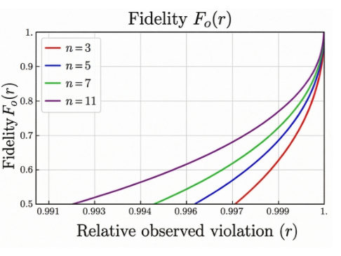
<figcaption class="paper-figure-caption"><b>Fig 1.</b> FIG. 1: Trade-off between relative observed violation (r) and fidelity Fs(r) and Fo(r), ∀O ∈{XA3, ZA3}.</figcaption>
</figure>
<figure class="paper-figure-card">
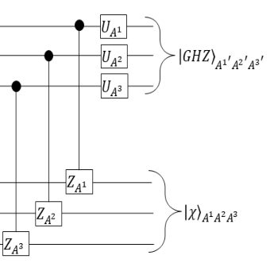
<figcaption class="paper-figure-caption"><b>Fig 2.</b> FIG. 2: Self-testing circuit for n=3</figcaption>
</figure>
</div>

<p><strong>Summary.</strong> The paper introduces a generalized Bell inequality to test genuine multipartite nonlocality across arbitrary numbers of measurement settings. Using advanced algebraic techniques like SOS decomposition, the authors derive the optimal quantum bound, proving that this nonlocality guarantees the extraction of maximal global randomness. Furthermore, they provide detailed analyses quantifying how robust these certified correlations remain when experimental noise is introduced.</p>
<p><strong>Why it may be interesting.</strong> This work provides rigorous mathematical tools (SOS decomposition) to certify fundamental quantum properties like nonlocality and randomness in complex multipartite settings, which is crucial for device-independent quantum cryptography protocols.</p>
<details>
<summary>Detailed structure</summary>
<p><strong>Main problem.</strong> To develop a Bell inequality capable of detecting genuine multipartite nonlocality (GMNL) in arbitrary $m$-partite systems with an odd number of measurement settings ($n$), while simultaneously certifying maximal global device-independent randomness.</p>
<p><strong>Main result.</strong> The framework successfully derives the optimal quantum violation, establishes strict separations between local/bi-local and quantum bounds, and proves that $m$ bits of DI randomness can be extracted at this optimum.</p>
<p><strong>Method.</strong> The authors employ an analytical Sum-of-Squares (SOS) decomposition technique to derive upper bounds for Bell functionals without assuming finite Hilbert space dimensions. Self-testing is achieved by analyzing the conditions under which the quantum expectation value matches the theoretical maximum.</p>
<p><strong>Model / system.</strong> The study analyzes $m$-partite quantum systems subjected to measurements with $n$ possible settings per party, characterized by a multipartite Bell functional $\Gamma^m_n$. The analysis extends to quantifying robustness against noise using trace distance calculations.</p>
<p><strong>Key observables.</strong> Bell functional ($\Gamma^m_n$), optimal quantum violation ($\langle\Gamma^m_n
angle_{	ext{opt}}^Q$), min-entropy ($R_{i_1...i_m}$), and trace distance between ideal and noisy expectation values.</p>
<p><strong>Important parameters / regimes.</strong> Number of parties ($m$), number of settings per party ($n$, must be odd), noise parameters ($\epsilon, \alpha, eta$), and the relative violation $r$.</p>
<p><strong>Assumptions / limitations.</strong> The derivation relies on SOS decomposition to bypass dimension assumptions. Robustness analysis often uses approximations based on small error margins (e.g., trace distance bounds proportional to $eta$).</p>
<p><strong>Figures summary.</strong> Figures illustrate trade-offs between relative observed violation ($r$) and fidelity/trace distance bounds, showing how noise parameters affect the achievable quantum correlations.</p>
<p><strong>Paper structure.</strong> The paper systematically derives upper bounds for local ($\Gamma^m_n|_L$) and bi-local ($\Gamma^m_n|_{BL}$) models. It then uses SOS decomposition to find the optimal quantum value $\langle\Gamma^m_n
angle_{	ext{opt}}^Q$, followed by detailed sections on self-testing, randomness extraction, and finally, quantifying robustness against noise using trace distance bounds.</p>
</details>
<details>
<summary>Abstract</summary>
<p>Bell nonlocality provides the foundation for device-independent (DI) certification of quantum devices. We introduce a Bell inequality capable of identifying genuine multipartite nonlocality (GMNL) in an arbitrary m-partite scenario with an arbitrary odd number of measurements per party. Since the multi-setting nature of this inequality precludes the use of Jordan's Lemma, we construct an analytical sum-of-squares (SOS) decomposition to obtain the optimal quantum violation without assuming any bound on the Hilbert space dimension. This, in turn, enables self-testing of the shared entangled state and the corresponding measurement observables, up to local isometries, whose existence we confirm using a swap-based certification scheme. In addition, we show that our framework enables the extraction of maximal global DI randomness (m bits) at the optimal quantum violation, thereby exceeding previous limitations in the GMNL regime. Finally, we demonstrate that the architecture of our inequality yields improved robustness to noise as the number of measurement settings grows, ensuring experimental feasibility.</p>
</details>
<p><sub><a href="#top">↑ back to top</a></sub></p>

<p><a id="paper-2606.10858"></a></p>
<h3 id="thermodynamic-approach-to-momentum-transport-in-dense-fluids"><a href="http://arxiv.org/abs/2606.10858v1">Thermodynamic Approach to Momentum Transport in Dense Fluids</a></h3>
<p><strong>Authors:</strong> Christopher Devik Fjeldstad, Jonas Bueie, Astrid S. de Wijn<br>
<strong>Type:</strong> theory · <strong>Category:</strong> statistical mechanics · <strong>PDF:</strong> <a href="https://arxiv.org/pdf/2606.10858v1">https://arxiv.org/pdf/2606.10858v1</a><br>
<strong>Analysis basis:</strong> full PDF text, analyzed in chunks
<strong>Topic relevance:</strong> <code>Keldysh / 2PI / non-Gaussian methods</code> <strong>1/5</strong> · <code>non-equilibrium dynamics</code> <strong>1/5</strong></p>
<div class="figure-strip-hint">↔ Scroll figures horizontally</div>
<div class="paper-figures-scroll">
<figure class="paper-figure-card">
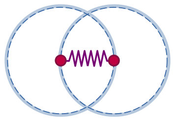
<figcaption class="paper-figure-caption"><b>Fig 1.</b> FIG. 1. The geometry of diatomic molecules as modeled in this paper. The intra-molecular bond is modeled using a har- monic spring. Inter-particle interactions are modeled accord- ing to the Lennard-Jones potential.</figcaption>
</figure>
<figure class="paper-figure-card">
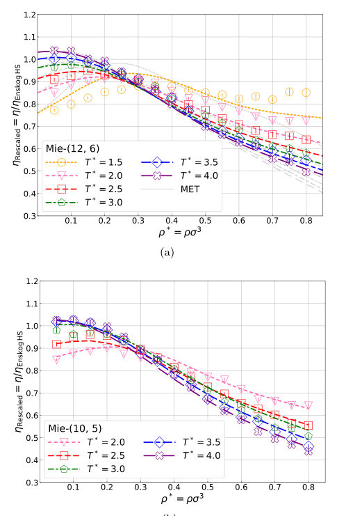
<figcaption class="paper-figure-caption"><b>Fig 2.</b> FIG. 3. Rescaled shear viscosity from simulations and pre- dictions for (a) LJ fluids and (b) Mie-(10, 5) fluids, using Xres = βuex. Each temperature is assigned a symbol and as- sociated dash style as denoted in the legend. For comparison in Fig. (a) the light thin gray lines give the MET prediction with dash styles given by the corresponding temperature. The shear viscosity is rescaled using the Enskog prediction for a hard-sphere fluid with diameter σHS = σ and mass m = 1.</figcaption>
</figure>
<figure class="paper-figure-card">
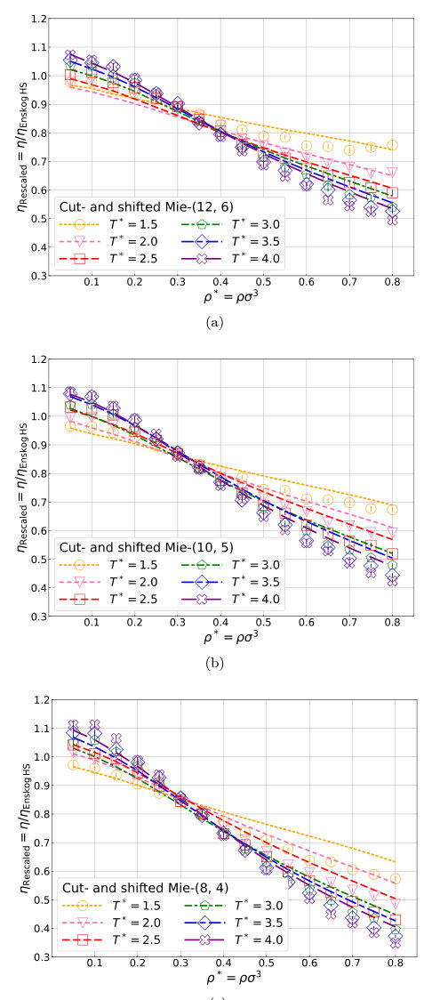
<figcaption class="paper-figure-caption"><b>Fig 3.</b> FIG. 2. Rescaled shear viscosity from simulations and predic- tions for (a) WCA fluids, (b) cut and shifted Mie-(10, 5) fluids and (c) cut and shifted Mie-(8, 4) fluids, using Xres = βuex. Each temperature is assigned a symbol and corresponding dash style as denoted in the legend. The shear viscosity is rescaled using the Enskog prediction for a hard-sphere fluid with diameter σHS = σ and mass m = 1.</figcaption>
</figure>
<figure class="paper-figure-card">
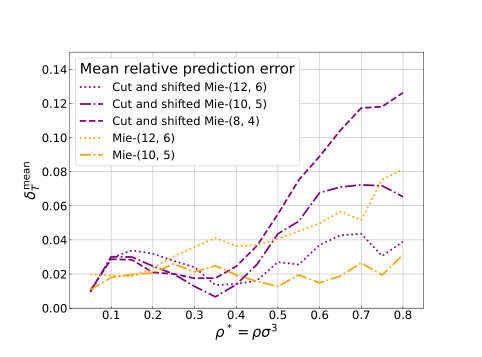
<figcaption class="paper-figure-caption"><b>Fig 4.</b> FIG. 4. The relative prediction error δmean T averaged over tem- perature T ∗as a function of number density ρ∗. The errors are generally small when ρ∗≲0.3. Above this density par- ticle cores are expected to continuously overlap, three-body correlations become significant, and the magnitude of the as- sociated prediction error increases.</figcaption>
</figure>
<figure class="paper-figure-card">
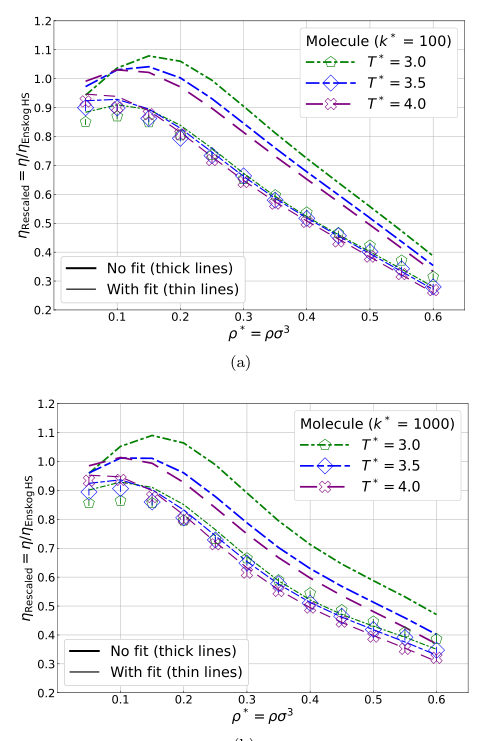
<figcaption class="paper-figure-caption"><b>Fig 5.</b> FIG. 5. Rescaled shear viscosity from simulations and pre- dictions for diatomic LJ fluids with spring constant k∗= 100 (a) and spring constant k∗= 1000 (b). Each temperature is assigned a symbol and associated dash style as denoted in the legend. The prediction lines are calculated using either Xres = βuex (thick lines), or Xres = Cβuex (thin lines). In the latter case, C is treated as a fit parameters. The shear viscos- ity is rescaled using the Enskog prediction for a hard-sphere fluid with diameter σHS = (59/32)1/3σ and mass m = 2.</figcaption>
</figure>
</div>

<p><strong>Summary.</strong> This work introduces an advanced theoretical framework to calculate fluid shear viscosity by replacing reliance on effective hard-sphere diameters with a function derived from the system's excess internal energy. By applying this method to LJ and WCA fluids, the authors demonstrate high predictive accuracy across wide density ranges, significantly advancing classical transport theory.</p>
<p><strong>Why it may be interesting.</strong> While focused on classical fluids, the rigorous development of generalized transport equations based on fundamental thermodynamic potentials ($eta u_{	ext{ex}}$) provides a powerful template for developing similar non-equilibrium theories in quantum many-body systems where simple kinetic approximations fail.</p>
<details>
<summary>Detailed structure</summary>
<p><strong>Main problem.</strong> To develop a general theoretical framework for calculating transport coefficients, specifically shear viscosity, of dense fluids that extends beyond the limitations of existing theories like Chapman-Enskog theory.</p>
<p><strong>Main result.</strong> The proposed thermodynamic approach using an exchange function ($\hat{g}$) accurately predicts the shear viscosity of various fluid models (WCA, LJ) with low mean relative errors (2%-4%) at low to intermediate densities.</p>
<p><strong>Method.</strong> The authors reformulate transport equations by relating the necessary correction term ($X_{	ext{res}}$) in an equation of state to the excess internal energy ($eta u_{	ext{ex}}$), thus bypassing reliance on effective hard-sphere diameters.</p>
<p><strong>Model / system.</strong> The study investigates dense fluids modeled using Lennard-Jones (LJ) and Weeks-Chandler-Anderson (WCA) potentials, as well as diatomic molecules with harmonic bond interactions. Simulations are performed across a wide range of densities ($
ho^<em>$) and temperatures ($T^</em>$).</p>
<p><strong>Key observables.</strong> Shear viscosity ($\eta$), Compressibility factor ($Z$), Mean relative prediction error.</p>
<p><strong>Important parameters / regimes.</strong> Density range: $0.05 \le 
ho^* \le 0.8$; Temperature range: $1.5 \le T^* \le 4.0$. Low/intermediate density regime defined as $
ho^* \le 0.3$.</p>
<p><strong>Assumptions / limitations.</strong> The primary assumption is that the necessary correction term ($X_{	ext{res}}$) can be accurately represented by a function of the excess internal energy ($eta u_{	ext{ex}}$). Limitations exist at high densities or when inelastic collisions are dominant.</p>
<p><strong>Figures summary.</strong> Figures compare predicted vs. simulated shear viscosity for Mie fluids, showing good agreement at low density; error plots show increasing errors above $
ho^* \approx 0.35$.</p>
<p><strong>Paper structure.</strong> The paper introduces the general framework using an exchange function ($\hat{g}$), shows how existing theories (MET) fit into it, proposes $X_{	ext{res}} = eta u_{	ext{ex}}$, and then applies this to test predictions against simulations for various fluid models.</p>
</details>
<details>
<summary>Abstract</summary>
<p>We present a new framework for extending Chapman-Enskog theory beyond the hard-sphere fluid model. Rather than relying on effective hard sphere diameters, the approach makes use of on an exchange function which can be related to the thermodynamic properties of the system. We show that two existing extensions, including modified Enskog theory (MET), fit into this new framework. Based on our approach, we propose an alternative to MET that takes into account the potential interaction energy associated with the inter-particle interactions in the fluid. The proposed expression is applied to predicting the shear viscosity of several different simulated fluid models across a wide set of densities $0.05 \leq ρ^* \leq 0.8$ and temperatures $1.5 \leq T^* \leq 4.0$ in Lennard-Jones units. The fluid models considered include both the Weeks-Chandler-Anderson (WCA) fluid and the Lennard-Jones (LJ) fluid. At low and intermediate density, here taken to be $ρ^* \leq 0.3$, we report mean relative prediction errors between $2\%$ and $4\%$ for both these. Across all densities considered, the largest mean relative errors reported are $4.4\%$ and $8.1\%$ for the WCA fluid and LJ fluid respectively. We also investigate other interaction models, including a diatomic molecular model, in order to better understand the limitations of our approach.</p>
</details>
<p><sub><a href="#top">↑ back to top</a></sub></p>

<p><a id="paper-2606.10150"></a></p>
<h3 id="towards-the-implementation-of-a-quantum-classifier"><a href="http://arxiv.org/abs/2606.10150v1">Towards the implementation of a quantum classifier</a></h3>
<p><strong>Authors:</strong> Lorenzo Confalonieri, Adrián Pérez Salinas, Stefano Carrazza<br>
<strong>Type:</strong> both · <strong>Category:</strong> quantum information and computing · <strong>PDF:</strong> <a href="https://arxiv.org/pdf/2606.10150v1">https://arxiv.org/pdf/2606.10150v1</a><br>
<strong>Analysis basis:</strong> full PDF text, analyzed in chunks
<strong>Topic relevance:</strong> <code>entanglement &amp; information structure</code> <strong>1/5</strong> · <code>methods for driven-dissipative</code> <strong>1/5</strong></p>
<div class="figure-strip-hint">↔ Scroll figures horizontally</div>
<div class="paper-figures-scroll">
<figure class="paper-figure-card">
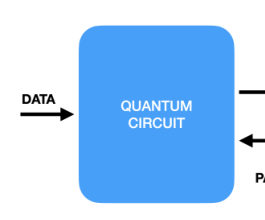
<figcaption class="paper-figure-caption"><b>Fig 1.</b> Figure 2.1: Simple diagram that shows how the hybrid method works.</figcaption>
</figure>
<figure class="paper-figure-card">
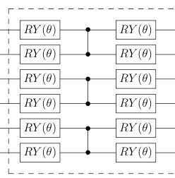
<figcaption class="paper-figure-caption"><b>Fig 2.</b> Figure 3.2: Quantum classifier circuit for the classification of 8x8 images. The first dashed box is the Ansatz and the second one represents the final rota- tions. Rotations RY(θ) are trainable. Dashed horizontal lines between Ansatz and final rotations indicate the possibility to concatenate multiple Ans¨atze.</figcaption>
</figure>
<figure class="paper-figure-card">
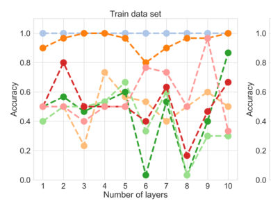
<figcaption class="paper-figure-caption"><b>Fig 3.</b> Figure 3.3: Accuracy of the train set (on the left) and the test set (on the right) for different minimizers and by increasing the number of layers. The loss function used is “square”. The quantum classifier circuit has 6 qubits and it is illustrated in Figure 3.2. The number of shots is 1000.</figcaption>
</figure>
<figure class="paper-figure-card">
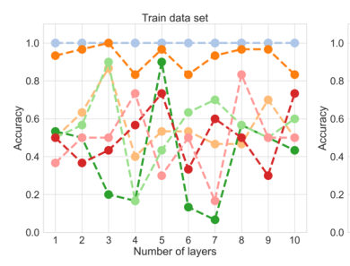
<figcaption class="paper-figure-caption"><b>Fig 4.</b> Figure 3.4: Accuracy of the train set (on the left) and the test set (on the right) for different minimizers and by increasing the number of layers. The loss function used is “ce”. The quantum classifier circuit has 6 qubits and it is illustrated in Figure 3.2. The number of shots is 1000.</figcaption>
</figure>
<figure class="paper-figure-card">
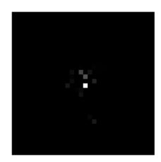
<figcaption class="paper-figure-caption"><b>Fig 5.</b> Figure 4.1: The picture on the left shows an example of the class “0”; on the right an example of class “1”. Both images belong to the “without pile-up” data set. A darker pixel stands for a lower value.</figcaption>
</figure>
</div>

<p><strong>Summary.</strong> This paper demonstrates the feasibility of using a quantum circuit as a binary classifier for tasks ranging from digit recognition to distinguishing particle collisions at colliders. It details a hybrid training methodology involving VQCs and classical optimization, achieving results comparable to small neural networks in simulation. The work highlights both the potential power and the significant limitations (like barren plateaus) of current quantum machine learning implementations.</p>
<p><strong>Why it may be interesting.</strong> While focused on ML applications rather than fundamental AMO physics, the reliance on parameterized quantum circuits and the discussion of barren plateaus are central topics in quantum information theory relevant to simulating complex quantum dynamics.</p>
<details>
<summary>Detailed structure</summary>
<p><strong>Main problem.</strong> The work investigates building a binary quantum classifier using quantum circuits for tasks like image classification (MNIST) and particle physics process discrimination (jet tagging).</p>
<p><strong>Main result.</strong> A binary quantum classifier can be built, showing performance comparable to small CNNs on jet images, but the overall approach is limited by model expressiveness and current simulation constraints.</p>
<p><strong>Method.</strong> The study employs a hybrid quantum-classical approach, using Variational Quantum Circuits (VQC) trained via classical optimizers (like COBYLA or Powell) to minimize loss functions (e.g., Mean Squared Error).</p>
<p><strong>Model / system.</strong> The model is a parameterized quantum circuit Ansatz built with qubits and trainable rotation gates ($R_Y(	heta)$), simulated using the Qibo framework on classical computers.</p>
<p><strong>Key observables.</strong> Classification accuracy, ROC curve, AUC score, confusion matrices, and test set accuracy comparing quantum results to CNN benchmarks.</p>
<p><strong>Important parameters / regimes.</strong> Number of qubits (up to 10 for $32	imes 32$ images), number of Ansatz layers, training data size, and choice of classical minimizer/loss function.</p>
<p><strong>Assumptions / limitations.</strong> The primary limitations noted are the potential failure due to Barren Plateaus in gradient-based optimization and that current results are simulations, not real hardware measurements.</p>
<p><strong>Figures summary.</strong> Figures systematically plot training vs. test accuracy across varying parameters (layers, data size, loss function) for MNIST digits and jet images under 'with' and 'without pile-up' conditions.</p>
<p><strong>Paper structure.</strong> The paper first introduces the concept of the binary quantum classifier, details the input encoding methods for small arrays and images, describes the VQC Ansatz structure, and then systematically tests performance across multiple datasets (MNIST, LHC jets) by varying optimization parameters and comparing results to classical CNNs.</p>
</details>
<details>
<summary>Abstract</summary>
<p>In this work, we investigate the use of a quantum circuit as a binary classification model in the context of quantum machine learning. We call this model, binary quantum classifier.   First, we describe fundamental concepts of quantum computing and introduce the computational tool used: Qibo, an open-source framework for efficient quantum simulations and quantum hardware control. Then, we describe how to design a binary quantum classifier for the classification of images and small arrays of variables by showing how to input data in the circuit, defining a quantum circuit model Ansatz with trainable parameters and a loss function, and implementing multiple minimizers. We test our quantum classifier with two data sets. The first one is the MNIST data set which is composed of handwritten digits (reduced to only handwritten zeros and handwritten ones for binary classification). We study the behavior of different minimizers by increasing the number of layers of the Ansatz. The second data set represents two different high energy collisions that can occur at colliders such as LHC (CERN). Due to in-time proton-proton interactions known as pile-up, we distinguish two different data sets: "without pile-up" and "with pile-up". These collisions can be represented by images of size 32x32 or by six high-level variables that we call features. By increasing the size of the training data set and the number of layers of the Ansatz, we search for the best minimizer. Splitting the data set in training set and test set, we compute: ROC curve, AUC score, confusion matrices and test set accuracy. For "with pile-up" images, we compare the results obtained with the quantum classifier with a small convolutional neural network.   We conclude that is possible to build a binary quantum classifier with a quantum circuit and we highlight its performances and limitations in comparison with classical technologies.</p>
</details>
<p><sub><a href="#top">↑ back to top</a></sub></p>

<p><a id="paper-2606.09988"></a></p>
<h3 id="absence-of-poor-local-minima-in-matrix-product-states"><a href="http://arxiv.org/abs/2606.09988v1">Absence of poor local minima in matrix product states</a></h3>
<p><strong>Authors:</strong> Hao-Kai Zhang, Chenghong Zhu, Shuo Liu, Shi-Xin Zhang, Tao Xiang<br>
<strong>Type:</strong> theory · <strong>Category:</strong> disordered systems and neural networks · <strong>PDF:</strong> <a href="https://arxiv.org/pdf/2606.09988v1">https://arxiv.org/pdf/2606.09988v1</a><br>
<strong>Analysis basis:</strong> full PDF text, analyzed in chunks
<strong>Topic relevance:</strong> <code>methods for driven-dissipative</code> <strong>1/5</strong></p>
<div class="figure-strip-hint">↔ Scroll figures horizontally</div>
<div class="paper-figures-scroll">
<figure class="paper-figure-card">
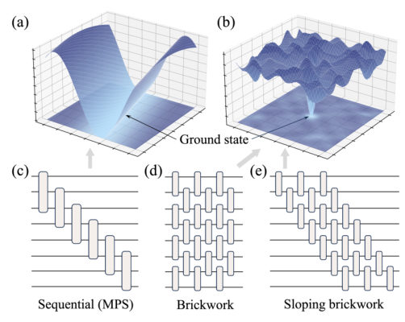
<figcaption class="paper-figure-caption"><b>Fig 1.</b> FIG. 1. Energy landscape schematics in the absence (a) or presence (b) of poor local minima. (c) Sequential circuit, serving as the preparation circuit for MPS. (d) Brickwork cir- cuit. (e) Sloping brickwork circuit, which reduces to sequen- tial circuit when restricted to a single layer. Each block in the circuits represents a unitary that is universal on its support. The grey arrows indicate that the typical energy landscapes of sequential circuits are free from poor local minima, whereas those of brickwork-type circuits are not.</figcaption>
</figure>
<figure class="paper-figure-card">
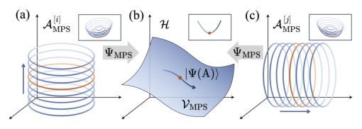
<figcaption class="paper-figure-caption"><b>Fig 2.</b> FIG. 2. Local minimum correspondence. (a) and (c) depict the MPS representation spaces A[i] MPS and A[j] MPS with orthog- onality centers at site i and j, respectively. The rings repre- sent the gauge orbits. (b) depicts the MPS variety VMPS as a subset in the Hilbert space H. A gauge orbit is mapped to a single physical state by the contraction map ΨMPS. The insets depict the respective energy landscapes. Each physical local minimum is mapped to a continuum of local minima in the representation space with the same energy.</figcaption>
</figure>
<figure class="paper-figure-card">
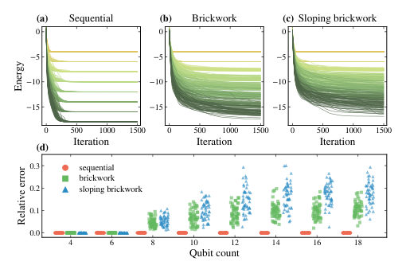
<figcaption class="paper-figure-caption"><b>Fig 3.</b> FIG. 3. The numerical training curves of (a) sequential cir- cuits of β = 3, L = 1, (b) brickwork circuits of β = 2, L = 4, and (c) sloping brickwork circuits of β = 2, L = 4. The block size β and the number of layers L are selected so that the num- ber of parameters in different circuits are comparable. The loss function is the energy expectation of random backward- evolved Hamiltonians. The darkness of the color marks the system size from 4 to 18 qubits. The number of samples is 50 for each system size. (d) The corresponding local minimum distributions in the form of scatter plots, with the data ex- tracted from the final values in (a-c).</figcaption>
</figure>
</div>

<p><strong>Summary.</strong> This work mathematically proves that Matrix Product States (MPS) possess an energy landscape free from poor local minima due to effective local overparametrization arising from gauge freedom. By analyzing the convergence dynamics using gradient flow methods, the authors show MPS are robustly trainable compared to general quantum circuits. This provides a crucial theoretical guide for overcoming optimization bottlenecks in variational quantum algorithms.</p>
<p><strong>Why it may be interesting.</strong> It provides a rigorous mathematical explanation for why certain structured quantum ansatzes (like MPS) are inherently more robust to optimization failures than general circuits, guiding the design of variational algorithms.</p>
<details>
<summary>Detailed structure</summary>
<p><strong>Main problem.</strong> The paper resolves the paradox of quantum circuit trainability by proving that Matrix Product States (MPS) energy landscapes are free from poor local minima, unlike general circuits.</p>
<p><strong>Main result.</strong> The gauge freedom inherent in MPS creates an effective local overparametrization that forces local minima to concentrate near the global minimum, ensuring reliable optimization convergence.</p>
<p><strong>Method.</strong> Theoretical analysis involving defining and measuring the 'local minimum distribution' using the long-time limit of gradient flow (TDVP/QNGD) on the parameter space.</p>
<p><strong>Model / system.</strong> The study analyzes variational quantum circuits parameterized by MPS, applied to general Hamiltonians $H$. The comparison is drawn between sequential circuit structures and more restrictive 'brickwork' circuits.</p>
<p><strong>Key observables.</strong> Local minimum distribution ($P_E(E)$), relative error ($\epsilon$), and the ratio $R(A)$ quantifying gradient cancellation.</p>
<p><strong>Important parameters / regimes.</strong> Bond dimension ($\chi$), system size ($N$), and the structure of the Hamiltonian (e.g., local vs. non-local terms).</p>
<p><strong>Assumptions / limitations.</strong> The analysis assumes that the optimization flow converges to a well-defined measure over local minima, which is shown to be independent of the specific MPS representation center.</p>
<p><strong>Figures summary.</strong> Figures compare training curves showing sequential circuits converging reliably while brickwork circuits get trapped in poor local minima; other figures illustrate gradient cancellation ratios $R(A)$ remaining positive for MPS structures.</p>
<p><strong>Paper structure.</strong> The paper first establishes the theoretical framework by defining the optimization map and local minimum distribution. It then proves key theorems demonstrating the invariance of this distribution under changes in the MPS representation center, culminating in numerical evidence comparing sequential vs. brickwork circuit performance.</p>
</details>
<details>
<summary>Abstract</summary>
<p>Quantum circuits suffer from severe trainability issues: even shallow circuits are swamped with poor local minima. Yet matrix product states (MPS), which can be prepared by sequential circuits, are remarkably trainable in practice -- as demonstrated by decades of successful density matrix renormalization group calculations. In this work, we resolve this apparent paradox by proving that the energy landscapes of MPS are free from poor local minima, under the same setting where brickwork circuits are not. The key insight is that the gauge freedom of MPS creates an effective local overparametrization that causes local minima to concentrate near the global minimum, analogous to overparametrized classical neural networks. We rigorously prove that the local minimum distribution of the MPS energy landscape is invariant under moves of the orthogonality center. Numerical experiments further confirm that the optimization of sequential circuits converges to near-optimal solutions even for random Hamiltonians, in stark contrast to brickwork circuits. Our findings highlight the pivotal role of effective local overparametrization in determining trainability, providing a valuable guide for overcoming the trainability bottleneck of variational quantum algorithms.</p>
</details>
<p><sub><a href="#top">↑ back to top</a></sub></p>

<p><a id="paper-2606.11076"></a></p>
<h3 id="coset-ensemble-decoder-for-quantum-error-correction-with-algorithm-hardware-co-design"><a href="http://arxiv.org/abs/2606.11076v1">Coset Ensemble Decoder for Quantum Error Correction with Algorithm-Hardware Co-Design</a></h3>
<p><strong>Authors:</strong> Shuang Liang, Jubo Xu, Giulio Bassanino, Qianzhou Wang, Yidong Zhou, Yuncheng Lu, Zhiwen Mo, Paul H. J. Kelly, Bo Yuan, Wayne Luk, Hongxiang Fan<br>
<strong>Type:</strong> both · <strong>Category:</strong> quantum information and computing · <strong>PDF:</strong> <a href="https://arxiv.org/pdf/2606.11076v1">https://arxiv.org/pdf/2606.11076v1</a><br>
<strong>Analysis basis:</strong> full PDF text, analyzed in chunks
<strong>Topic relevance:</strong> <code>QC/QI experiment</code> <strong>1/5</strong></p>
<div class="figure-strip-hint">↔ Scroll figures horizontally</div>
<div class="paper-figures-scroll">
<figure class="paper-figure-card">
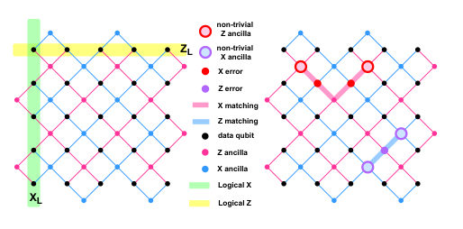
<figcaption class="paper-figure-caption"><b>Fig 1.</b> Fig. 1. Layout of surface code (left) and syndrome behavior with correspond- ing matching for X and Z errors on data qubits (right).</figcaption>
</figure>
<figure class="paper-figure-card">
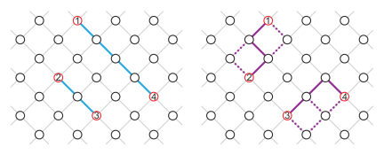
<figcaption class="paper-figure-caption"><b>Fig 2.</b> Fig. 2. Two matching examples: the blue (left) belongs to coset 1 with logical error Lb, the purple (right) to coset 2 with logical error Lp. Dashed lines indicate alternative error paths.</figcaption>
</figure>
<figure class="paper-figure-card">
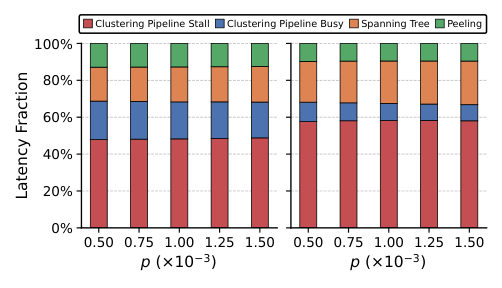
<figcaption class="paper-figure-caption"><b>Fig 3.</b> Fig. 3. Latency breakdown for code distances 3 (left) and 11 (right) on a two- stage baseline without optimizations. Clustering Pipeline Stall and Clustering Pipeline Busy are cycles spent inside the pipelined clustering engine (stalled vs. productive); Spanning Tree and Peeling are cycles spent in the post- clustering traversal modules.</figcaption>
</figure>
<figure class="paper-figure-card">

<figcaption class="paper-figure-caption"><b>Fig 4.</b> Fig. 4. Graph compression.</figcaption>
</figure>
<figure class="paper-figure-card">
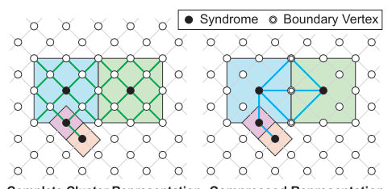
<figcaption class="paper-figure-caption"><b>Fig 5.</b> Fig. 5 shows a two-stage architecture aligned with the algorithm: a fully pipelined clustering engine feeds K parallel Ensemble Forest Exploration (EFE) instances and a Voting module. Clustering is a streaming growth-and-merge compu- tation that naturally maps to a seven-stage pipeline (S1–S7). Each EFE instance then performs a stateful forest traversal followed by ROE; because this traversal state cannot be time- multiplexed without overwriting in-flight adjacency data, the K instances are replicated and run in parallel. Adjacency- list construction overlaps with clustering, and after clustering terminates each EFE instance traverses under a distinct priority scheme before the Voting...</figcaption>
</figure>
</div>

<p><strong>Summary.</strong> This paper presents a novel algorithm-hardware co-design decoder for Quantum Error Correction (QEC) that improves upon existing methods by explicitly considering logically equivalent error cosets. By combining ensemble forest exploration with specialized, resource-efficient hardware architecture, the system achieves superior accuracy and latency trade-offs compared to state-of-the-art decoders on surface codes.</p>
<p><strong>Why it may be interesting.</strong> While focused on digital quantum computation, the rigorous analysis of resource scaling, pipeline stalls, and trade-offs between algorithmic complexity and hardware implementation is highly relevant to designing control electronics for complex AMO or superconducting qubit systems.</p>
<details>
<summary>Detailed structure</summary>
<p><strong>Main problem.</strong> The core challenge is designing a Quantum Error Correction (QEC) decoder that achieves both high logical accuracy and ultra-low latency for reliable large-scale quantum computation.</p>
<p><strong>Main result.</strong> The proposed coset ensemble decoding co-design significantly improves the accuracy-latency trade-off over vanilla MWPM and UF decoders, while drastically reducing hardware resource consumption (up to 8.2x reduction in LUTs).</p>
<p><strong>Method.</strong> The authors introduce coset ensemble decoding, which approximates the intractable coset maximum-likelihood rule using ensemble forest exploration, coupled with a domain-specific, pipelined hardware architecture featuring hierarchical ID mapping and multi-bank memory hashing.</p>
<p><strong>Model / system.</strong> The work analyzes error correction on surface codes under circuit-level depolarizing noise. The decoding process must resolve ambiguities (degeneracy) where multiple physical errors yield the same syndrome but different logical outcomes.</p>
<p><strong>Key observables.</strong> Logical Error Rate (LER), decoding latency, FPGA LUT consumption, and System Infidelity ($\hat{C}(R)$).</p>
<p><strong>Important parameters / regimes.</strong> Code distance ($d$), physical error rate ($p$), and tunable candidate number ($K$).</p>
<p><strong>Assumptions / limitations.</strong> The approach is an approximation to the optimal coset ML decoding; hardware optimizations assume specific concurrent memory access patterns that can be managed by hashing.</p>
<p><strong>Figures summary.</strong> Figures compare LER vs. code distance for MWPM, UF, and the proposed method; latency breakdowns show bottlenecks in clustering pipelines; architectural diagrams detail multi-bank hashing and hierarchical ID mapping.</p>
<p><strong>Paper structure.</strong> The paper progresses from identifying the need to solve coset ML decoding (due to degeneracy) to proposing the ensemble forest exploration algorithm. It then details the hardware co-design, including specific memory management techniques (hashing/ID mapping), followed by extensive benchmarking comparing accuracy and latency against state-of-the-art decoders.</p>
</details>
<details>
<summary>Abstract</summary>
<p>Reliable large-scale quantum computation relies on fault-tolerant architectures, where quantum error correction (QEC) continuously extracts and decodes error syndromes in real time. A critical component in QEC is the decoder, a classical subsystem that must simultaneously deliver high logical accuracy and ultra-low latency. This paper presents a novel algorithm-hardware co-design that improves the accuracy-latency trade-off over existing approaches such as vanilla Minimum-Weight Perfect Matching (MWPM) and Union-Find (UF) decoders. At the algorithmic level, we introduce coset ensemble decoding, which improves UF decoding by explicitly exploiting logically equivalent cosets. Our method performs ensemble forest exploration to generate multiple coset-consistent candidates and aggregates them to approximate coset-level maximum-likelihood decoding. We further reduce computational and memory complexity via reverse-order elimination and lossless graph compression, without sacrificing accuracy. At the hardware level, we design a domain-specific architecture that temporally reuses resources, avoiding the code-distance-proportional resource growth in prior spatial architectures. Several optimizations, such as multi-bank memory hashing and hierarchical ID mapping, are proposed to mitigate pipeline stalls and memory conflicts under highly concurrent access patterns. Under a circuit-level depolarizing noise model, our co-design approach achieves a better accuracy-latency trade-off than prior MWPM- and UF-based decoders, while reducing FPGA LUT consumption by up to 8.2 times compared with reported UF-based decoder resources. The tunable candidate number further exposes a flexible design knob, enabling users to tailor decoding performance to the requirements of different fault-tolerant workloads. Our implementation is publicly available at https://github.com/IMSeonL/coset-ensemble-decoder.</p>
</details>
<p><sub><a href="#top">↑ back to top</a></sub></p>

<p><a id="paper-2606.10430"></a></p>
<h3 id="efficient-magic-state-cultivation-for-math884math-gates"><a href="http://arxiv.org/abs/2606.10430v1">Efficient Magic State Cultivation for $\sqrt{T}$ Gates</a></h3>
<p><strong>Authors:</strong> I-Chi Chen, Matheus da Silva Fonseca, Andrew Sornborger<br>
<strong>Type:</strong> theory · <strong>Category:</strong> quantum information and computing · <strong>PDF:</strong> <a href="https://arxiv.org/pdf/2606.10430v1">https://arxiv.org/pdf/2606.10430v1</a><br>
<strong>Analysis basis:</strong> full PDF text, analyzed in chunks
<strong>Topic relevance:</strong> <code>quantum measurements</code> <strong>1/5</strong></p>
<div class="figure-strip-hint">↔ Scroll figures horizontally</div>
<div class="paper-figures-scroll">
<figure class="paper-figure-card">
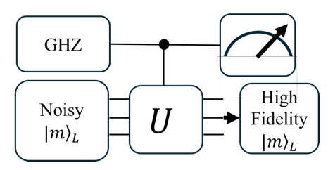
<figcaption class="paper-figure-caption"><b>Fig 1.</b> FIG. 1. General phase kickback measurement for arbitrary |m⟩L. The N qubit GHZ state |ψ⟩ =</figcaption>
</figure>
<figure class="paper-figure-card">
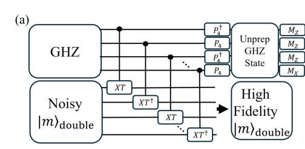
<figcaption class="paper-figure-caption"><b>Fig 2.</b> FIG. 2. The phase kickback measurement circuits for √</figcaption>
</figure>
<figure class="paper-figure-card">
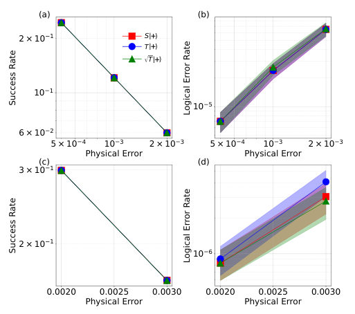
<figcaption class="paper-figure-caption"><b>Fig 3.</b> FIG. 3. The performance of ungrown d = 3 √</figcaption>
</figure>
<figure class="paper-figure-card">
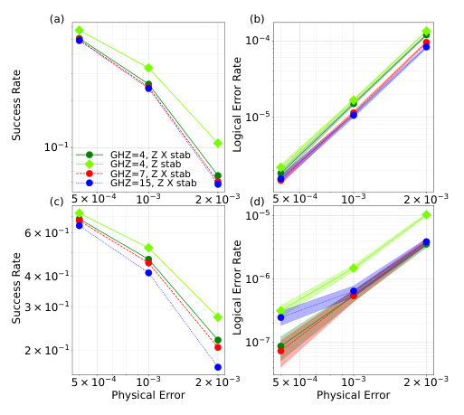
<figcaption class="paper-figure-caption"><b>Fig 4.</b> FIG. 4. Performance of ungrown f = 3 magic state cultivation using code switching. (With and without idling noise). The success rate (left panel) and the logical error rate (right panel) varying with physical noise strength. The upper panels (a,b) depict results with idling noise. The lower panels (c,d) depict outcomes without idling noise. In the legend, GHZ indicates how many qubit GHZ states are used. Z stab (Z X stab) represents the process with only Z type (both Z and X type, resp.) stabilizer measurements before and after the double phase kickback check. Corresponding shades represent standard errors obtained from sampling.</figcaption>
</figure>
<figure class="paper-figure-card">
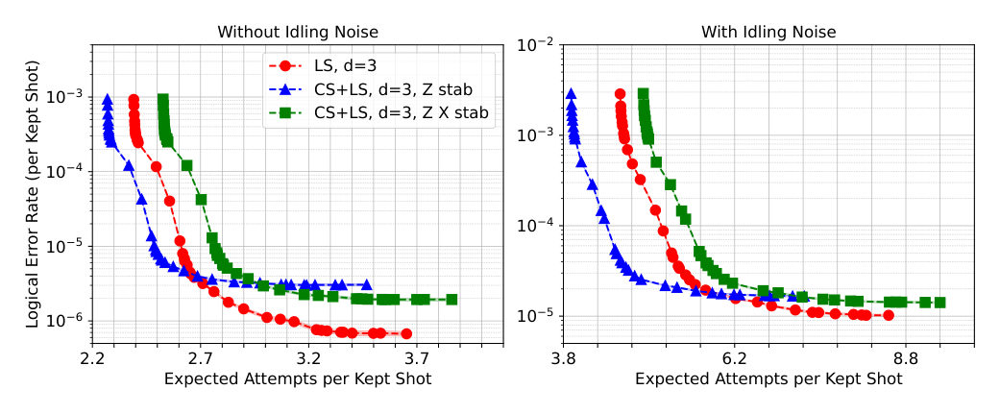
<figcaption class="paper-figure-caption"><b>Fig 5.</b> FIG. 5. End-to-end simulation result for magic state cultivation. The logical infidelity of simulation for f = 3 under the uniform noise model ϵ = 10−3 with idling noise (right plot), and without idling noise (left plot). The curves vary with complementary gap cutoff to postselect the logical error-prone sydrome. LS represents the escape stage using direct lattice surgery between rotated surface code (df = 11) and the [[15, 1, 3]] doubled color code. LS+CS indicates the escape procedure using code switch and lattice surgery between rotated surface code (df = 11) and [[7, 1, 3]] Steane code. Z Stab (Z X Stab) represents the process with only Z type (both Z and X type) stabilizer measurements...</figcaption>
</figure>
</div>

<p><strong>Summary.</strong> This paper advances the theory of magic state cultivation by generalizing phase kickback checks beyond previously studied cases. It details a protocol for efficiently cultivating $\sqrt{T}$ magic states on complex codes like the doubled color code using lattice surgery. The results demonstrate improved fault tolerance and provide pathways for realizing early, scalable quantum computation.</p>
<p><strong>Why it may be interesting.</strong> This work is highly relevant to theoretical quantum information scientists working on resource estimation and hardware-agnostic protocols, as it provides concrete, advanced techniques for generating necessary non-Clifford gates.</p>
<details>
<summary>Detailed structure</summary>
<p><strong>Main problem.</strong> The research aims to generalize phase kickback checks for magic states at arbitrary Clifford hierarchy levels, specifically focusing on efficient cultivation protocols for $\sqrt{T}$ gates.</p>
<p><strong>Main result.</strong> The authors present a protocol for $\sqrt{T}|+
angle_L$ magic state cultivation on the doubled color code and demonstrate that end-to-end simulations show high fidelity when employing lattice surgery escape strategies.</p>
<p><strong>Method.</strong> The methods involve generalizing phase kickback measurements, implementing protocols on specific Quantum Error Correcting Codes (QECCs) like the doubled color code, and utilizing lattice surgery for code expansion.</p>
<p><strong>Model / system.</strong> The work analyzes quantum error correction codes, including the 2D and doubled color codes, which are used to protect logical qubits. The goal is to prepare non-Clifford magic states ($T$ or $\sqrt{T}$) required for universal fault-tolerant quantum computation.</p>
<p><strong>Key observables.</strong> Logical error rate (infidelity), success rate, spacetime volume per shot, and the parity outcome of phase kickback measurements.</p>
<p><strong>Important parameters / regimes.</strong> Code parameters such as $f=3$ ($  ext{[[15, 1, 3]]}$) and $f=5$ ($  ext{[[49, 1, 5]]}$), and noise regimes (with/without idling noise).</p>
<p><strong>Assumptions / limitations.</strong> The protocol relies on the ability of the code to support a corresponding transversal phase gate ($P_{n-1}$) during double-check, and simulations often use approximations for computational tractability.</p>
<p><strong>Figures summary.</strong> Figures illustrate general phase kickback measurement circuits (Fig. 1) and specific $\sqrt{T}|+
angle_L$ check circuits on the doubled color code (Fig. 2). Other figures compare end-to-end simulation performance across different escape strategies and noise models.</p>
<p><strong>Paper structure.</strong> The paper progresses by first generalizing the phase kickback checks, then presenting a detailed protocol for $\sqrt{T}|+
angle_L$ cultivation on the doubled color code using lattice surgery. Finally, it discusses incorporating this into larger fault-tolerant architectures like STAR.</p>
</details>
<details>
<summary>Abstract</summary>
<p>Recently, experimental and theoretical quantum error correction methodology has seen remarkable breakthroughs. In particular, magic state cultivation has been shown to simplify magic-state preparation and make it feasible for near-term devices. However, recent research on magic state cultivation has focused primarily on the cultivation of $T\left| + \right>_L$. Only a few other magic state cultivation methods beyond $T\left| + \right>_L$ have been investigated. Here, we generalize phase kickback checks for magic states at arbitrary Clifford hierarchy levels in specific codes. We provide an example of cultivation of $\sqrt{T}\left| + \right>_L$ in the doubled color code and the corresponding escape strategy using lattice surgery from the color code to large rotated surface codes. Using state vector simulation for un-grown cultivation, we observe a strong consistence between $S\left| + \right>_L$ and $\sqrt{T}\left| + \right>_L$ cultivation's performance on the doubled color code. Finally, we discuss the application of the corresponding $\sqrt{T}\left| + \right>_L$ cultivation, incorporating the STAR architecture and $T$ gates, for early fault-tolerant quantum computing and its potential to shorten gate synthesis in the fully fault-tolerant quantum computing era.</p>
</details>
<p><sub><a href="#top">↑ back to top</a></sub></p>

<p><a id="paper-2606.10343"></a></p>
<h3 id="neural-network-solution-of-subtracted-three-body-faddeev-integral-equations-near-the-efimov-limit"><a href="http://arxiv.org/abs/2606.10343v1">Neural-network solution of subtracted three-body Faddeev integral equations near the Efimov limit</a></h3>
<p><strong>Authors:</strong> Lucas A. Souza<br>
<strong>Type:</strong> theory · <strong>Category:</strong> numerical methods · <strong>PDF:</strong> <a href="https://arxiv.org/pdf/2606.10343v1">https://arxiv.org/pdf/2606.10343v1</a><br>
<strong>Analysis basis:</strong> full PDF text, analyzed in chunks
<strong>Topic relevance:</strong> <code>methods for driven-dissipative</code> <strong>1/5</strong></p>
<div class="figure-strip-hint">↔ Scroll figures horizontally</div>
<div class="paper-figures-scroll">
<figure class="paper-figure-card">
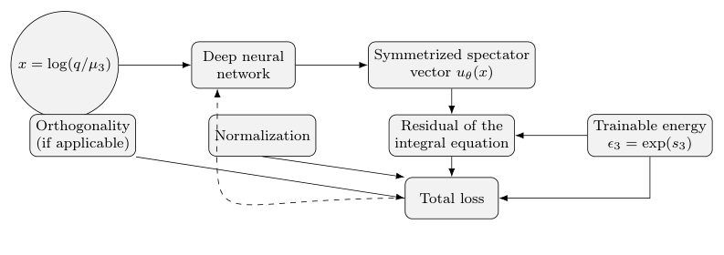
<figcaption class="paper-figure-caption"><b>Fig 1.</b> FIG. 1. Schematic representation of the DNN solver for the subtracted Faddeev integral equation. The logarithmic momentum x = log(q/µ3) is fed into a feed-forward neural network, which outputs the symmetrized spectator vector uθ(x). The binding energy ϵ3 = exp(s3), with s3 = log ϵ3, is a trainable parameter and enters the residual of the discretized integral equation. The total loss combines the equation-informed residual with normalization and, when required, orthogonality constraints. The dashed feedback arrow indicates that gradients flow back through the kernel B(ϵ3, 1/a) to both the network weights θ and the energy parameter s3.</figcaption>
</figure>
<figure class="paper-figure-card">
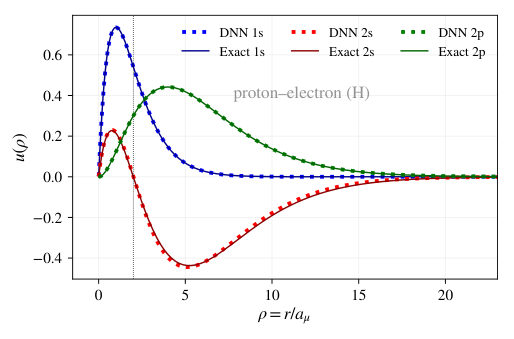
<figcaption class="paper-figure-caption"><b>Fig 2.</b> FIG. 2. The DNN curves closely follow the analytical results; the 2s node at ρ = 2 is correctly captured.</figcaption>
</figure>
<figure class="paper-figure-card">
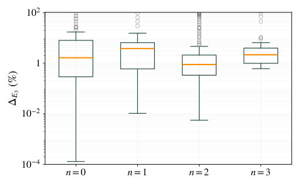
<figcaption class="paper-figure-caption"><b>Fig 3.</b> FIG. 4. DNN–deterministic relative deviation ∆E3, Eq. (21), for the first four three-body bound states. The boxplot shows the distribution of ∆E3 over all values of 1/a for which the DNN was continued. The deterministic benchmark is a nu- merical reference obtained from the same discretized kernel, not an exact analytical solution.</figcaption>
</figure>
<figure class="paper-figure-card">
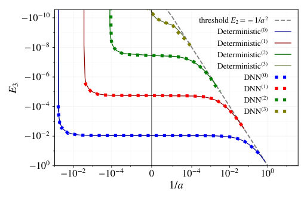
<figcaption class="paper-figure-caption"><b>Fig 4.</b> FIG. 3. Efimov spectrum E3 as a function of the inverse scattering length for the first four three-body bound-state branches. Solid curves denote the deterministic solution obtained by diagonalizing the discretized subtracted kernel. Dotted curves denote the DNN continuation with trainable energy. The gray dashed line marks the atom-dimer thresh- old E2 = −1/a2 in the units used here (ℏ= m = µ3 = 1). The unitary limit is indicated by the vertical black line.</figcaption>
</figure>
<figure class="paper-figure-card">
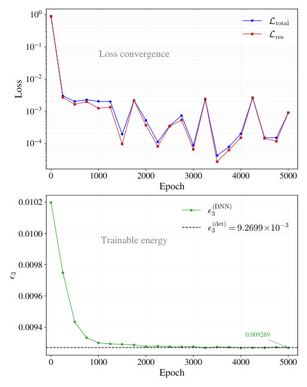
<figcaption class="paper-figure-caption"><b>Fig 5.</b> FIG. 5. Training convergence of the DNN solver for the Efimov ground state at unitarity. (a) Residual loss Lres (red squares) and total loss Ltotal (blue circles) vs. epoch. (b) Trainable binding-energy parameter ϵ(DNN) 3 vs. epoch; the dashed line marks the deterministic reference ϵ(det) 3 = 9.2699 × 10−3.</figcaption>
</figure>
</div>

<p><strong>Summary.</strong> The authors apply Deep Neural Networks (DNNs) to solve the three-body Faddeev integral equation for bosons near the Efimov regime. By minimizing the residual of the discretized equation while treating the binding energy as a trainable parameter, they create a compact and differentiable representation of the solution. This method successfully reproduces universal physical constants and allows for smooth continuation of the spectrum across varying interaction strengths.</p>
<p><strong>Why it may be interesting.</strong> This work demonstrates a powerful application of machine learning—using differentiable physics constraints (residual minimization) to solve complex, non-linear few-body quantum problems that are analytically intractable or numerically demanding.</p>
<details>
<summary>Detailed structure</summary>
<p><strong>Main problem.</strong> The paper addresses the challenge of solving the three-body Faddeev integral equation for identical bosons near the Efimov limit, a problem characterized by scale invariance and renormalization.</p>
<p><strong>Main result.</strong> A Deep Neural Network (DNN) trained via residual minimization successfully reproduces known universal physics, such as the Efimov ground-state binding scale at unitarity with high accuracy.</p>
<p><strong>Method.</strong> The core method involves using a DNN ansatz to represent the spectator vector solution of the discretized integral equation, minimizing the residual loss while jointly training the three-body binding energy parameter.</p>
<p><strong>Model / system.</strong> The system is three identical bosons interacting via a zero-range s-wave force. The physics is governed by the subtracted spectator Faddeev integral equation, which requires renormalization due to ultraviolet divergences.</p>
<p><strong>Key observables.</strong> Three-body binding energy ($\epsilon_3$), Efimov scaling ratios ($\epsilon(n)/\epsilon(n+1)$), and the dependence of these quantities on the inverse scattering length ($1/a$).</p>
<p><strong>Important parameters / regimes.</strong> The three-body binding scale ($\epsilon_3$) is a trainable parameter, and the system is analyzed across varying $1/a$, including the unitary limit ($1/a=0$).</p>
<p><strong>Assumptions / limitations.</strong> The method assumes that the solution can be represented by a DNN ansatz and relies on comparing results against deterministic diagonalization as an <em>a posteriori</em> benchmark.</p>
<p><strong>Figures summary.</strong> Figures compare DNN solutions to exact radial wave functions for Hydrogen benchmarks, plot the continuation of $E_3$ vs. $1/a$, and show training convergence plots for the residual loss and energy parameter.</p>
<p><strong>Paper structure.</strong> The paper first establishes the physical problem (Faddeev equation near Efimov limit), details the DNN formulation using residual minimization with a trainable energy, validates this approach on the Hydrogen atom benchmark, and finally applies it to trace the universal Efimov spectrum across varying scattering lengths.</p>
</details>
<details>
<summary>Abstract</summary>
<p>We apply a deep-neural-network (DNN) ansatz to the symmetrized spectator vector of the subtracted three-body Faddeev integral equation for identical bosons near the Efimov limit. The network is trained by minimizing the residual of the discretized integral equation, while the positive binding scale associated with the three-body energy is treated as a trainable parameter. Deterministic diagonalization of the same discretized kernel is used only as an a posteriori numerical benchmark. As preliminary validation, the neural-solver strategy is tested on the analytically solvable hydrogen radial problem. At unitarity, the DNN reproduces the Efimov ground-state binding scale with a DNN--deterministic deviation of $0.022\%$, while the first excited state is recovered to $0.002\%$. The deterministic solver recovers the universal Efimov scaling ratio $e^{2π/s_0}\simeq 515.03$, and the neural method traces the bound-state branches as a function of the inverse scattering length $1/a$ by continuation from the unitary solution. These results indicate that DNN-based residual minimization can provide a compact and differentiable representation of a renormalized few-body integral-equation solution in a regime governed by discrete scale invariance.</p>
</details>
<p><sub><a href="#top">↑ back to top</a></sub></p>

<p><a id="paper-2606.10872"></a></p>
<h3 id="quantum-colorings-of-spheres"><a href="http://arxiv.org/abs/2606.10872v1">Quantum Colorings of Spheres</a></h3>
<p><strong>Authors:</strong> Olivier Lalonde<br>
<strong>Type:</strong> theory · <strong>Category:</strong> quantum information and computing · <strong>PDF:</strong> <a href="https://arxiv.org/pdf/2606.10872v1">https://arxiv.org/pdf/2606.10872v1</a><br>
<strong>Analysis basis:</strong> full PDF text, analyzed in chunks
<strong>Topic relevance:</strong> <code>entanglement &amp; information structure</code> <strong>1/5</strong></p>
<div class="figure-strip-hint">↔ Scroll figures horizontally</div>
<div class="paper-figures-scroll">
<figure class="paper-figure-card">
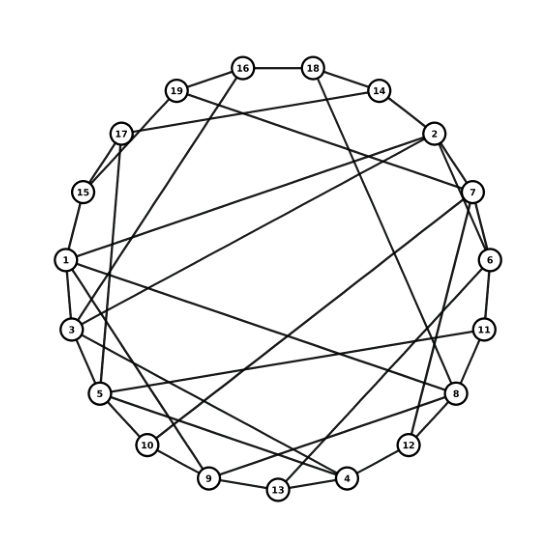
<figcaption class="paper-figure-caption"><b>Fig 1.</b> Figure 1: The graph G19. The graph6 representation of this graph is RxLAKA@AgYAWDGO?O?@??A?W@@OC@ .</figcaption>
</figure>
<figure class="paper-figure-card">
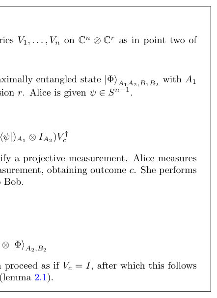
<figcaption class="paper-figure-caption"><b>Fig 2.</b> Figure 2: The exact remote state preparation protocol proving corollary 1.12.</figcaption>
</figure>
<figure class="paper-figure-card">
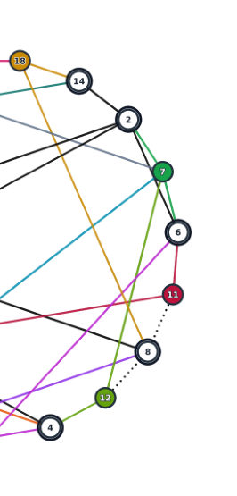
<figcaption class="paper-figure-caption"><b>Fig 3.</b> Figure 3: An alternative representation of the graph G19, used in the proof of theorem 4.5.</figcaption>
</figure>
</div>

<p><strong>Summary.</strong> This paper tackles the problem of determining when the quantum chromatic number of spheres equals their dimension. It achieves this by developing advanced techniques rooted in Clifford algebra representations and analyzing algebraic constraints derived from graph homomorphisms. The results provide precise classification theorems, linking quantum colorability to the existence of Hadamard matrices and demonstrating applications in quantum communication protocols.</p>
<p><strong>Why it may be interesting.</strong> The deep connection drawn between quantum information theory (remote state preparation, error correction codes) and classical combinatorial problems (graph coloring) provides a powerful theoretical framework for understanding resource limitations in quantum computation.</p>
<details>
<summary>Detailed structure</summary>
<p><strong>Main problem.</strong> The paper investigates determining the quantum chromatic number of spheres ($\chi_q(S^{n-1})$) and establishing necessary and sufficient conditions for this number to equal the dimension $n$. It also explores generalizations involving rank-$r$ colorings.</p>
<p><strong>Main result.</strong> It establishes that $\chi_q(S^{n-1}) = n$ if and only if $n \in \{2, 4, 8\}$ in the rank-one case, linking this to the existence of Hadamard matrices. Furthermore, it provides an exact remote state preparation protocol for real qubits.</p>
<p><strong>Method.</strong> The analysis heavily relies on representation theory applied to Clifford algebras, analyzing unitary representations and projectors derived from graph homomorphisms between spheres and Grassmannians. Proofs involve algebraic constraints derived from these quantum structures.</p>
<p><strong>Model / system.</strong> The primary model is the quantum coloring of spheres ($S^{n-1}_F$), where $F$ can be $\mathbb{R}$ or $\mathbb{C}$. The mathematical machinery involves analyzing $*$-subalgebras generated by unitaries representing Clifford algebras on $m$ generators.</p>
<p><strong>Key observables.</strong> Quantum Chromatic Number ($\chi_q(G)$), Orthogonal Rank ($\xi_R, \xi_C$), and the existence of specific unitary representations or maximal code spaces ($P$).</p>
<p><strong>Important parameters / regimes.</strong> The dimension $n$, the rank $r$ of the coloring, and the order of potential Hadamard matrices.</p>
<p><strong>Assumptions / limitations.</strong> The analysis often assumes finite dimensionality for the underlying Hilbert space and relies on establishing equivalences between quantum colorability conditions and algebraic properties of unitaries.</p>
<p><strong>Figures summary.</strong> Figure 2 illustrates an exact remote state preparation protocol used to prove a key corollary regarding real-valued states, demonstrating resource efficiency in quantum communication.</p>
<p><strong>Paper structure.</strong> The paper progresses by first establishing known results for small dimensions (like $n=2, 4, 8$), then proving the necessity of using real representations over complex ones. It develops algebraic machinery based on Clifford algebras and graph homomorphisms to derive necessary and sufficient conditions for $\chi_q(S^{n-1}) = n$.</p>
</details>
<details>
<summary>Abstract</summary>
<p>Cameron, Montanaro, Newman, Severini and Winter gave a construction which shows that, for $n \in \{2,4,8\}$, any graph $G$ which admits a real $n$-dimensional orthogonal representation is quantumly $n$-colorable. This result can be recast as the statement that the real sphere $S^{n-1}$ is quantumly $n$-colorable for these values of $n$. We investigate possible extensions of their construction. We first show that their hypothesis that the orthogonal representation be real-valued is required by proving that there is no analogue of this for the complex spheres, which all have quantum chromatic number strictly bigger than the dimension except in two dimensions. We also provide candidate finitary witnesses of this and show for the first time that the real and complex orthogonal ranks are distinct as a byproduct. For the real case, we show that if $S^{n-1}$ is quantumly $n$-colorable, then either $n=2$ or $n$ is a multiple of 4, and show that the converse holds whenever a Hadamard matrix of order $n$ exists. Hence, assuming the Hadamard conjecture, this completely classifies the dimensions to which the CMNSW construction can be extended. Our method of proof involves showing the equivalence between the existence of such a construction and the existence of a maximal code space for Clifford-algebraic errors given a clean ancilla, and we believe that the representation-theoretic techniques we use for tackling the latter problem could be of independent interest. It also follows from this equivalence that $S^{n-1}$ admits a rank-one quantum $n$-coloring if and only if $n \in \{2,4,8\}$, thereby settling a conjecture of Zeng and Zhang, as does the fact that for all $m \geq 1$, there exists a catalytic zero-error remote state preparation protocol for real $m$-qubit states with $m$ bits of communication and which consumes $m$ ebits.</p>
</details>
<p><sub><a href="#top">↑ back to top</a></sub></p>

<p><a id="paper-2606.10874"></a></p>
<h3 id="schmidt-decomposition-based-methods-for-efficient-quantum-image-encoding"><a href="http://arxiv.org/abs/2606.10874v1">Schmidt Decomposition-Based Methods for Efficient Quantum Image Encoding</a></h3>
<p><strong>Authors:</strong> Ana-Maria Pangeva, Yassine Ferhi, Alexander Geng, Andreas Weinmann, Desislava Ivanova, Ali Moghiseh<br>
<strong>Type:</strong> theory · <strong>Category:</strong> quantum information and computing · <strong>PDF:</strong> <a href="https://arxiv.org/pdf/2606.10874v1">https://arxiv.org/pdf/2606.10874v1</a><br>
<strong>Analysis basis:</strong> full PDF text, analyzed in chunks
<strong>Topic relevance:</strong> <code>entanglement &amp; information structure</code> <strong>1/5</strong></p>
<div class="figure-strip-hint">↔ Scroll figures horizontally</div>
<div class="paper-figures-scroll">
<figure class="paper-figure-card">
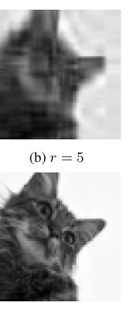
<figcaption class="paper-figure-caption"><b>Fig 1.</b> Figure 2: FRQI reconstructions for increasing Schmidt ranks r.</figcaption>
</figure>
<figure class="paper-figure-card">
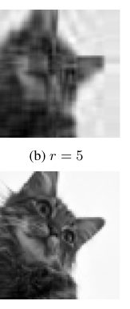
<figcaption class="paper-figure-caption"><b>Fig 2.</b> Figure 3: QPIE reconstructions for increasing Schmidt ranks r.</figcaption>
</figure>
<figure class="paper-figure-card">
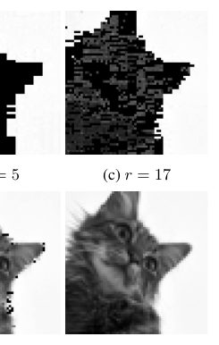
<figcaption class="paper-figure-caption"><b>Fig 3.</b> Figure 4: NEQR reconstructions for increasing Schmidt ranks r.</figcaption>
</figure>
<figure class="paper-figure-card">
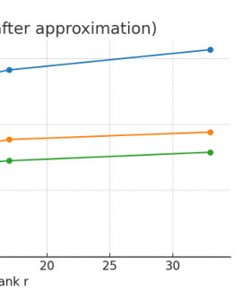
<figcaption class="paper-figure-caption"><b>Fig 4.</b> Figure 5: CNOT count vs. Schmidt rank (log scale) after applying Low-Rank Approximation (LRA).</figcaption>
</figure>
<figure class="paper-figure-card">
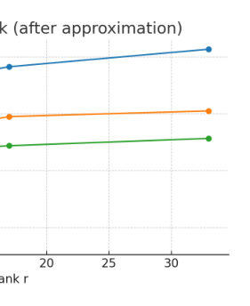
<figcaption class="paper-figure-caption"><b>Fig 5.</b> Figure 6: Circuit depth vs. Schmidt rank (log scale).</figcaption>
</figure>
</div>

<p><strong>Summary.</strong> This paper tackles the challenge of implementing complex quantum image encoding protocols on limited NISQ hardware. The authors propose using Low-Rank Approximation based on Schmidt decomposition to compress the required quantum state representation. This technique successfully reduces circuit depth and gate counts across multiple established models while preserving high levels of image reconstruction accuracy.</p>
<p><strong>Why it may be interesting.</strong> This work directly addresses the resource bottleneck in quantum machine learning/signal processing by providing a mathematically grounded technique to simplify state preparation circuits, which is crucial for advancing practical QIP algorithms on NISQ devices.</p>
<details>
<summary>Detailed structure</summary>
<p><strong>Main problem.</strong> Existing quantum image encoding methods for Quantum Image Processing (QIP) create circuits that are too deep, complex, and resource-intensive for current Noisy Intermediate-Scale Quantum (NISQ) hardware.</p>
<p><strong>Main result.</strong> Applying Low-Rank Approximation (LRA) via Schmidt decomposition significantly reduces circuit depth (e.g., 97% reduction in FRQI) while maintaining near-perfect image reconstruction fidelity.</p>
<p><strong>Method.</strong> The authors use the Schmidt decomposition to express the quantum state and then truncate this representation to a low rank, effectively keeping only the most significant entanglement components.</p>
<p><strong>Model / system.</strong> The study analyzes three existing QIP encoding models: FRQI, QPIE, and NEQR. These methods encode classical grayscale image data into high-dimensional quantum states $|\psi
angle$.</p>
<p><strong>Key observables.</strong> Circuit depth, CNOT count, Mean Squared Error (MSE), and visual quality of reconstructed images.</p>
<p><strong>Important parameters / regimes.</strong> The Schmidt rank ($r$) used for truncation is the key parameter varied to balance resource efficiency against reconstruction accuracy.</p>
<p><strong>Assumptions / limitations.</strong> The primary assumption is that natural images are compressible in the Schmidt basis, allowing low-rank approximation to preserve essential information while drastically reducing circuit overhead.</p>
<p><strong>Figures summary.</strong> Figures illustrate reconstructions at varying ranks for FRQI, QPIE, and NEQR. Tables compare resource metrics (depth, CNOTs) across models before and after LRA. Plots show the relationship between rank and complexity/error.</p>
<p><strong>Paper structure.</strong> The paper introduces the problem of resource-intensive QIP encoding, details the Schmidt decomposition and LRA technique, compares its application across FRQI, QPIE, and NEQR using quantitative metrics (depth, CNOTs, MSE), and concludes by demonstrating the feasibility of low-rank methods for near-term hardware.</p>
</details>
<details>
<summary>Abstract</summary>
<p>In quantum image processing, a fundamental step is encoding classical image data into quantum states. This can be achieved using methods such as Flexible Representation of Quantum Images (FRQI), Quantum Probability Image Encoding (QPIE), and Novel Enhanced Quantum Representation (NEQR). However, on real quantum hardware, these encodings can quickly lead to circuits with many gates, large circuit depth, and high qubit usage, which is a problem for Noisy Intermediate-Scale Quantum (NISQ) devices. In this work, we investigate whether low-rank state approximation, formulated via Schmidt decomposition, can help reduce this complexity. The method keeps only the most significant parts of a quantum state's entanglement structure, making state preparation more efficient while preserving most of the image information. We compare the three encoding techniques in their original form and with low-rank approximation, evaluating metrics such as circuit depth, CNOT count, MSE, and visual quality of reconstructed images. The results reveal meaningful trade-offs between accuracy and resource efficiency, with the FRQI model achieving a 97 percent reduction in circuit depth while maintaining a near-perfect reconstruction (MSE of about 0.27). This demonstrates the potential of low-rank techniques for advancing practical quantum image processing on near-term hardware.</p>
</details>
<p><sub><a href="#top">↑ back to top</a></sub></p>

<p><a id="paper-2606.11064"></a></p>
<h3 id="the-uzh-protocol-separating-errors-and-constructing-improved-cp2k-basis-sets-and-pseudopotentials"><a href="http://arxiv.org/abs/2606.11064v1">The UZH protocol: Separating errors and constructing improved CP2K basis sets and pseudopotentials</a></h3>
<p><strong>Authors:</strong> Hossein Mirhosseini, Tiziano M. A. Müller, Matthias Krack, Thomas D. Kühne, Jürg Hutter<br>
<strong>Type:</strong> theory · <strong>Category:</strong> other · <strong>PDF:</strong> <a href="https://arxiv.org/pdf/2606.11064v1">https://arxiv.org/pdf/2606.11064v1</a><br>
<strong>Analysis basis:</strong> full PDF text, analyzed in chunks
<strong>Topic relevance:</strong> <code>Keldysh / 2PI / non-Gaussian methods</code> <strong>1/5</strong></p>
<div class="figure-strip-hint">↔ Scroll figures horizontally</div>
<div class="paper-figures-scroll">
<figure class="paper-figure-card">
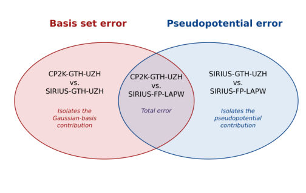
<figcaption class="paper-figure-caption"><b>Fig 1.</b> FIG. 1. Error decomposition in the UZH protocol. CP2K- GTH-UZH compared with SIRIUS-FP-LAPW gives the total practical error. CP2K-GTH-UZH compared with SIRIUS- GTH-UZH isolates the Gaussian-basis contribution. SIRIUS- GTH-UZH compared with SIRIUS-FP-LAPW isolates the pseudopotential contribution.</figcaption>
</figure>
<figure class="paper-figure-card">

<figcaption class="paper-figure-caption"><b>Fig 2.</b> Figure 1 summarizes this diagnostic construction and shows which pairwise comparison yields the total, Gaussian-basis, and pseudopotential contributions. In practice, the comparisons are performed not at a single volume but over equation-of-state curves. We use the ε metric of the verification project6,</figcaption>
</figure>
<figure class="paper-figure-card">
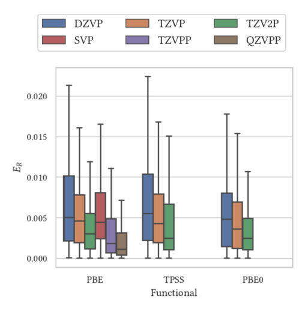
<figcaption class="paper-figure-caption"><b>Fig 3.</b> FIG. 2. Relative bond-length errors for the molecular calibra- tion set. The error is ER = |dCP2K −dG16|/|dG16|, where dG16 is the Gaussian 16/def2-QZVP all-electron reference bond length. DZVP, TZVP, and TZV2P are CP2K/GPW calcula- tions with GTH-UZH pseudopotentials. The PBE, TPSS, and PBE0 panels test transferability across exchange-correlation levels. In the PBE panel, SVP, TZVPP, and QZVPP are CP2K/GAPW all-electron calculations with corresponding UZH-MOLOPT basis sets and provide an internal all-electron CP2K comparison. Outliers are omitted to emphasize median and interquartile behavior.</figcaption>
</figure>
<figure class="paper-figure-card">

<figcaption class="paper-figure-caption"><b>Fig 4.</b> FIG. 3. Relative errors for average molecular polarizabilities, ER = |¯αCP2K −¯αG16|/|¯αG16|, for the PBE and PBE0 subsets. Polarizabilities are the most demanding molecular response test in this set because they require sufficient diffuse flexibil- ity; TPSS data are omitted because this property was not available for the corresponding CP2K calculations.</figcaption>
</figure>
<figure class="paper-figure-card">
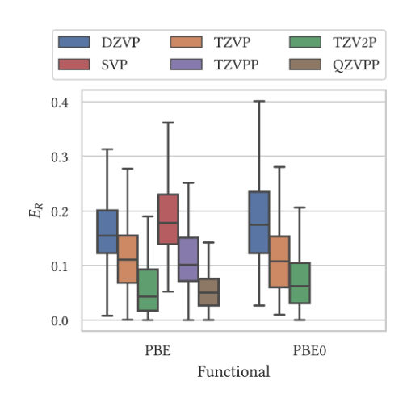
<figcaption class="paper-figure-caption"><b>Fig 5.</b> Figure 4 compares the total practical error of the initial and improved CP2K-GTH-UZH settings relative to the SIRIUS-FP-LAPW reference. In the initial settings, sev- eral elements exhibit ε &gt; 1 for at least two unary struc- tures, including noble gases, some transition metals, and heavier main-group elements. After applying the UZH protocol, the corresponding CP2K-GTH-UZH-improved map is substantially cleaner, with the largest residual deviations confined to a smaller set of chemically inter- pretable cases. The completed map in the lower panel fills entries not recomputed with the improved settings by retaining the corresponding initial values, providing a full-period overview on the same...</figcaption>
</figure>
</div>

<p><strong>Summary.</strong> This paper introduces the UZH protocol, a systematic workflow designed to diagnose and correct numerical errors in Density Functional Theory calculations that combine Gaussian basis sets and pseudopotentials. By comparing results from three different calculation formalisms, it successfully separates the total error into distinct contributions from the basis set and the pseudopotential itself. This constructive approach allows researchers to generate improved, validated parameter files for accurate simulations across various materials.</p>
<p><strong>Why it may be interesting.</strong> While focused on condensed matter DFT, the rigorous error decomposition technique is a sophisticated example of developing robust computational frameworks, which shares methodological rigor with advanced many-body theory development.</p>
<details>
<summary>Detailed structure</summary>
<p><strong>Main problem.</strong> Reliable DFT simulations require numerical settings whose residual errors are smaller than the chemical/material trends being studied, which is complicated by combining Gaussian basis sets and pseudopotentials.</p>
<p><strong>Main result.</strong> The UZH protocol successfully decomposes the total computational error into distinct Gaussian-basis and pseudopotential components, allowing for targeted, constructive revisions to generate validated parameter files.</p>
<p><strong>Method.</strong> A closed-loop workflow involving a three-way comparison between CP2K calculations, SIRIUS plane-wave calculations, and all-electron references to systematically isolate and correct approximation errors.</p>
<p><strong>Model / system.</strong> The methodology applies to molecular systems, liquids, and condensed phases simulated using DFT within the CP2K/Quickstep framework, focusing on core-valence interactions.</p>
<p><strong>Key observables.</strong> Error decomposition ($\Delta_{	ext{basis}}$ vs. $\Delta_{	ext{pp}}$), relative bond-length errors (ER), average molecular polarizabilities ($ar{\alpha}$), and equation-of-state error ($\epsilon$ metric).</p>
<p><strong>Important parameters / regimes.</strong> Gaussian basis set size (e.g., DZVP to TZV2P), pseudopotential type (GTH), and the condition number of the overlap matrix $\kappa_B(M)$.</p>
<p><strong>Assumptions / limitations.</strong> The total error is assumed to be a sum of independent contributions from the Gaussian basis approximation and the pseudopotential transferability.</p>
<p><strong>Figures summary.</strong> Figures compare initial vs. improved total practical errors, showing separation into basis-limited (noble gases) and pseudopotential-limited (transition metals) error sources; Table II guides optimization based on these component comparisons.</p>
<p><strong>Paper structure.</strong> The paper introduces the problem of combined code discrepancies, details the UZH protocol's three-way comparison methodology, presents molecular calibration benchmarks to guide basis set improvement, and finally applies this systematic diagnosis to solid-state equation-of-state calculations for targeted parameter refinement.</p>
</details>
<details>
<summary>Abstract</summary>
<p>Reliable density-functional simulations require numerical settings whose residual errors are smaller than the chemical and materials trends being interpreted. In CP2K/Quickstep, this requirement is complicated by the joint use of atom-centered Gaussian basis sets and norm-conserving pseudopotentials: a code-to-code discrepancy usually contains both contributions. We present the UZH protocol, a closed-loop CP2K workflow that calibrates molecularly optimized Gaussian basis sets on small molecules, validates the resulting settings in unary-crystal equation-of-state benchmarks, identifies whether the limiting approximation is the Gaussian basis or the pseudopotential. The diagnosis is then used to revise the parameter files. The central diagnostic is a three-way comparison between production CP2K-GTH-UZH calculations, SIRIUS calculations using the same Goedecker--Teter--Hutter pseudopotential in a systematic plane-wave representation, and all-electron full-potential linearized augmented-plane-wave SIRIUS references. This construction decomposes the practical CP2K error into a Gaussian-basis component and a pseudopotential component. The protocol distinguishes basis-limited noble-gas and heavy-element cases from pseudopotential-limited transition-metal cases, guides targeted revisions with the CP2K basis and pseudopotential optimizers, and produces improved MOLOPT basis sets and GTH pseudopotentials as explicit outputs of the workflow. The UZH protocol is therefore constructive: it does not merely measure or reduce errors a posteriori, but allows turning verification outliers into validated CP2K parameter files for simulations across molecules and condensed phases.</p>
</details>
<p><sub><a href="#top">↑ back to top</a></sub></p>
<h2 id="other-papers-4">Other papers (4)</h2>
<p><em>Papers from primary archives without highlighted authors or any topic match. Click to expand.</em></p>
<details>
<summary>Show other papers</summary>

<p><a id="paper-2606.11010"></a></p>
<h3 id="bosonic-cyclic-codes-trading-stabilizers-for-gaussian-non-clifford-phase-gates"><a href="http://arxiv.org/abs/2606.11010v1">Bosonic Cyclic Codes: Trading Stabilizers for Gaussian Non-Clifford Phase Gates</a></h3>
<p><strong>Authors:</strong> Owen C. Wetherbee, Yijia Xu, Victor V. Albert, Baptiste Royer, Valla Fatemi<br>
<strong>Type:</strong> theory · <strong>Category:</strong> quantum information and computing · <strong>PDF:</strong> <a href="https://arxiv.org/pdf/2606.11010v1">https://arxiv.org/pdf/2606.11010v1</a><br>
<strong>Analysis basis:</strong> full PDF text, analyzed in chunks</p>
<div class="figure-strip-hint">↔ Scroll figures horizontally</div>
<div class="paper-figures-scroll">
<figure class="paper-figure-card">
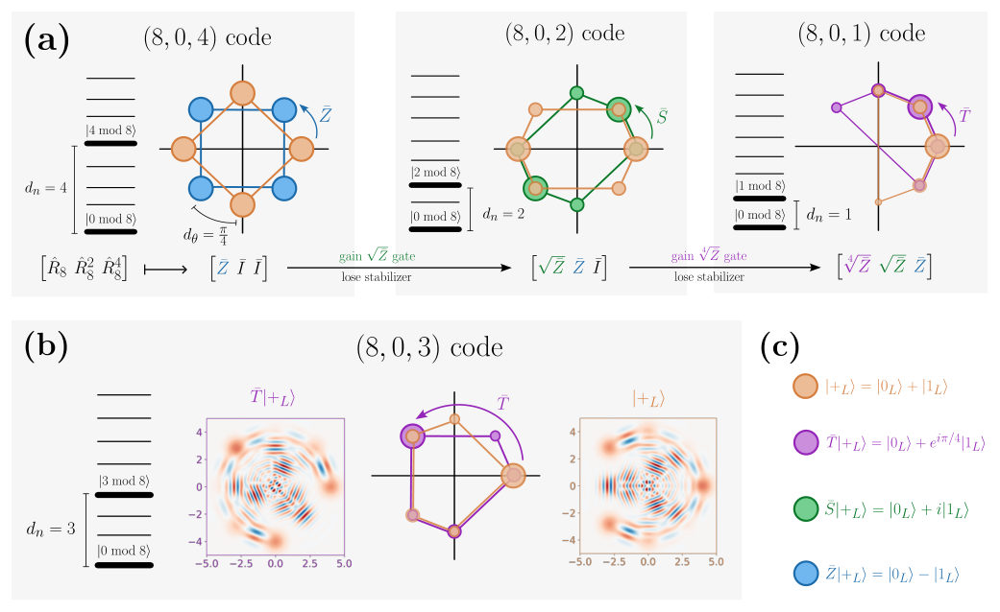
<figcaption class="paper-figure-caption"><b>Fig 1.</b> FIG. 1. Summary of bosonic cyclic codes. (a) Three bosonic cyclic codes which demonstrate the tradeoff between phase- space rotation gates and codespace stabilizers. The three code parameters (S, n0, n1) determine the Fock state periodicity, the |0L⟩Fock support (mod S), and the |1L⟩Fock support (mod S), respectively. The resulting Fock structure of each code is shown on the left of each panel. Ball-and-stick phase-space diagrams of relevant logical states (see (c)) are depicted on the right of each panel to demonstrate the rotation symmetry and gates of each code. The balls correspond to peaks of the Wigner function, with their size indicating the relative amplitude of the peak, and the...</figcaption>
</figure>
<figure class="paper-figure-card">
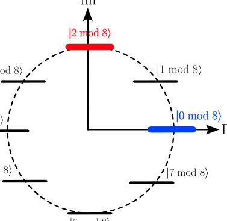
<figcaption class="paper-figure-caption"><b>Fig 2.</b> FIG. 2. Fock-phase diagram for a (S, n0, n1) = (8, 0, 2) code, representing the phase picked up by each |n mod S⟩ parity manifold under a ˆRS rotation. This visualization elu- cidates that this code has a number distance of dn = 2 and phase gate ¯S = ¯Z  π</figcaption>
</figure>
<figure class="paper-figure-card">
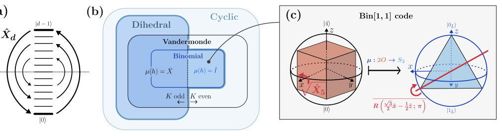
<figcaption class="paper-figure-caption"><b>Fig 3.</b> FIG. 3. Dihedral codes and SU(2) symmetry. (a) Action of the ˆ Xd = exp  −iπ ˆJ(d) x  d-dimensional spin rotation on</figcaption>
</figure>
<figure class="paper-figure-card">
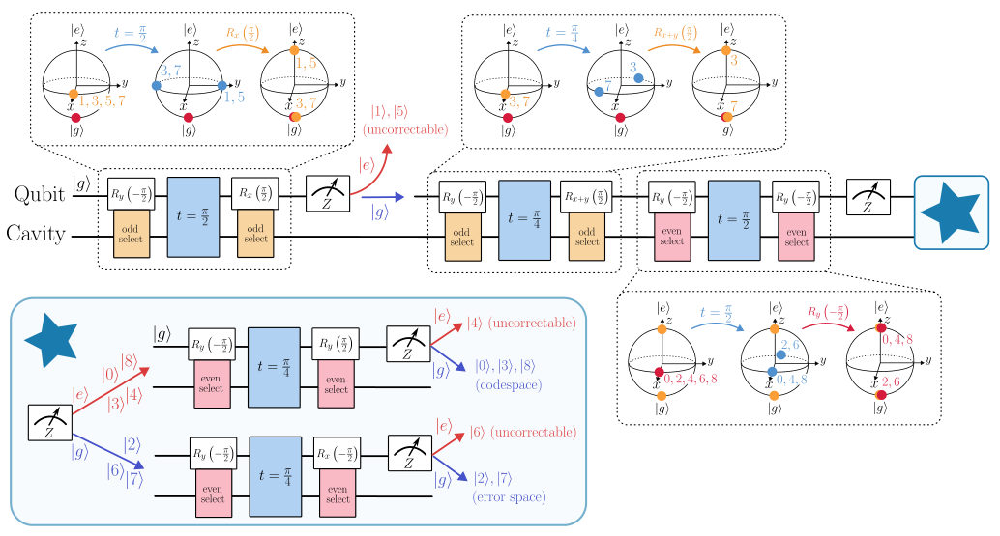
<figcaption class="paper-figure-caption"><b>Fig 4.</b> FIG. 4. Error detection protocol for finite-support (8, 0, 3) code with K = 2. The protocol involves a dispersively coupled qubit-cavity system, with the qubit starting in its ground state |g⟩. A sequence of adaptive RIMs are then performed, using a combination of idle evolutions U = exp (itˆn|e⟩⟨e|) (blue) and selective qubit rotations for the even (red) and odd (yellow) Fock parity manifolds. The evolution of the relevant Fock states around the ancilla Bloch sphere during the first two RIM steps are shown, with the ket notation dropped (i.e. |j⟩→j). A measurement of |e⟩after the first RIM step implies occupation of the Fock state manifold {|1⟩, |5⟩}, corresponding to an uncorrectable...</figcaption>
</figure>
<figure class="paper-figure-card">
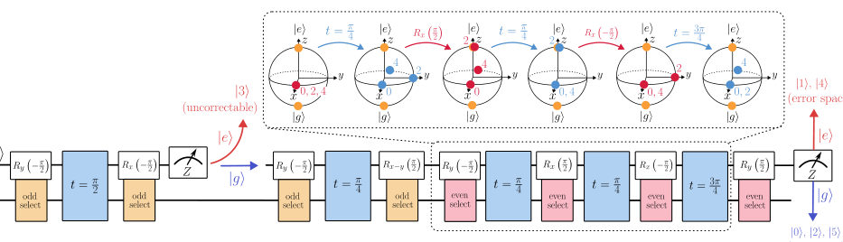
<figcaption class="paper-figure-caption"><b>Fig 5.</b> FIG. 5. Error detection protocol for finite-support (5, 0, 2) code with K = 2. This two-step adaptive RIM sequence involves the same types of operations as in Fig. 4, although with the evolution of the relevant Fock states around the ancilla Bloch sphere only shown for the even-select part of the second RIM step. A measurement of |e⟩after the first RIM step implies occupation of the |3⟩Fock state, corresponding to an uncorrectable error. Following instead a measurement of |g⟩, the more involved second RIM step then distinguishes the codespace {|0⟩, |2⟩, |5⟩} from the error space {|1⟩, |4⟩}, accomplishing the desired POVM and error detection. Note that, as presented, in the second RIM step,...</figcaption>
</figure>
</div>
<p><strong>Summary.</strong> The paper introduces bosonic cyclic codes, a generalization designed to balance error protection against photon loss with the ability to implement diverse logical gates. By developing a 'stabilizer-to-gate paradigm,' the authors show how sacrificing some error resilience can unlock multiple non-Clifford phase gates using passive Gaussian operations. This advances the theoretical understanding of fault tolerance in bosonic quantum memory systems.</p>
<p><strong>Why it may be interesting.</strong> This work is highly relevant as it directly addresses the fundamental engineering challenge in quantum computing: achieving universal gate sets while maintaining high levels of fault tolerance in physical bosonic hardware platforms.</p>
<details>
<summary>Detailed structure</summary>
<p><strong>Main problem.</strong> The core challenge is developing bosonic quantum error correction codes that can balance robust protection against physical errors (like photon loss) with the ability to implement a wide variety of fault-tolerant logical gates, especially non-Clifford phase gates.</p>
<p><strong>Main result.</strong> Bosonic cyclic codes provide a general framework allowing for a measurable tradeoff between error protection and gate count; this enables the realization of multiple non-Clifford gates using passive Gaussian rotations.</p>
<p><strong>Method.</strong> The authors generalize rotation-symmetric codes to bosonic cyclic codes, analyzing their structure via Fock state supports and developing protocols that convert high-order stabilizers into logical phase gates.</p>
<p><strong>Model / system.</strong> The system is modeled using bosonic modes (Fock states) in the context of quantum error correction. The theory focuses on constructing and analyzing 'bosonic cyclic codes' as generalizations of known families like cat and binomial codes.</p>
<p><strong>Key observables.</strong> Error distances ($d_n$ for photon loss, $d_	heta$ for phase rotation), logical Pauli gates ($ar{Z}, ar{X}$), and the ability to generate non-Clifford phase gates (e.g., $ar{T}$).</p>
<p><strong>Important parameters / regimes.</strong> Code parameters $(S, n_0, n_1)$, photon loss distance $d_n$, rotation angle periodicity $2\pi/S$, and coupling strengths ($\chi, \Omega$).</p>
<p><strong>Assumptions / limitations.</strong> The analysis often relies on specific mathematical structures (e.g., disjoint alternating Fock support for Vandermonde codes) and approximations regarding error detection protocols (e.g., using POVMs combining RIM).</p>
<p><strong>Figures summary.</strong> Figures illustrate the concept of the tradeoff between gate capability and error protection, showing diagrams of logical states under rotation ($\hat{R}_S$) and detailing multi-step adaptive Ramsey Interferometry Measurement (RIM) sequences for error detection in specific code examples.</p>
<p><strong>Paper structure.</strong> The paper progresses by first defining bosonic cyclic codes as a generalization of existing structures. It then analyzes the trade-off between error distances ($d_n$ vs $d_	heta$) and introduces generalized codes (cyclic cat/Vandermonde). Subsequent sections detail advanced techniques, including realizing $   ext{SU}(2)$ symmetries, developing specific error detection protocols using RIM, and formalizing a 'stabilizer-to-gate paradigm' for constructing new logical gates.</p>
</details>
<details>
<summary>Abstract</summary>
<p>Bosonic codes offer hardware-efficient approaches to quantum error correction, with the best encodings offering effective protection of idle quantum information against loss and dephasing - particularly rotation-symmetric codes, which include the cat and binomial code families. However, rotation-symmetric codes are only naturally endowed with a single logical Pauli gate, while other logical gates require the use of non-linear operations, obstructing the utility of these codes for realizing quantum algorithms. Here, we balance error protection with controllability by introducing bosonic cyclic codes: a generalization of rotation-symmetric codes that enable the measured tradeoff of error protection properties for fault-tolerant logical phase gates. Through our general construction, we find that sacrificing the detectability of a single photon loss relative to a rotation-symmetric code can yield a number of logical phase gates commensurate with the original rotation symmetry order of the code, all achievable via passive Gaussian rotations. Giving the corresponding generalizations of cat and binomial codes - which we dub cyclic cat and Vandermonde codes, respectively - we further find that many of the desirable properties of these codes transfer to the bosonic cyclic code setting. We go on to discuss the larger $SU(2)$ symmetry and rotation gates of the codes, which yield additional stabilizers and logical Pauli gates, as well as new non-Clifford gates for the smallest `kitten' binomial code, and provide a new error detection protocol. Finally, we introduce a general paradigm for converting higher-order stabilizers to logical gates, as in our generalization of rotation-symmetric codes, and apply it to several multimode bosonic codes.</p>
</details>
<p><sub><a href="#top">↑ back to top</a></sub></p>

<p><a id="paper-2606.11146"></a></p>
<h3 id="the-yang-baxter-equation-for-the-chiral-potts-model-and-integrable-parafermions"><a href="http://arxiv.org/abs/2606.11146v1">The Yang-Baxter Equation for the Chiral Potts Model and Integrable Parafermions</a></h3>
<p><strong>Authors:</strong> Zhao Zhang<br>
<strong>Type:</strong> theory · <strong>Category:</strong> statistical mechanics · <strong>PDF:</strong> <a href="https://arxiv.org/pdf/2606.11146v1">https://arxiv.org/pdf/2606.11146v1</a><br>
<strong>Analysis basis:</strong> full PDF text, analyzed in chunks</p>
<div class="figure-strip-hint">↔ Scroll figures horizontally</div>
<div class="paper-figures-scroll">
<figure class="paper-figure-card">
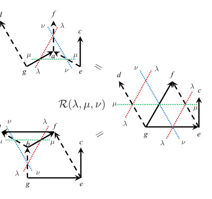
<figcaption class="paper-figure-caption"><b>Fig 1.</b> Figure 2: Graphical derivation of the YBE (51) using the STRs (52). Solid lines de- note the BWs W on horizontal bonds, dashed lines denote the BWs W on vertical bonds, and red, green, and blue dotted lines denote respectively the spectral param- eters λ,µ,ν.</figcaption>
</figure>
<figure class="paper-figure-card">
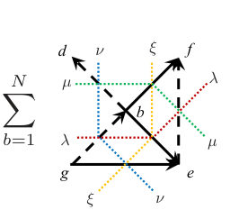
<figcaption class="paper-figure-caption"><b>Fig 2.</b> Figure 3: Diagrammatic representation of the star-star relation (56) that underpins the YBE (55). Solid (resp. dashed) lines denote the BWs W on horizontal bonds (resp. W on vertical bonds), and spectral parameters ξ,λ,µ,ν are marked by yellow, red, green and blue dotted lines respectively.</figcaption>
</figure>
<figure class="paper-figure-card">
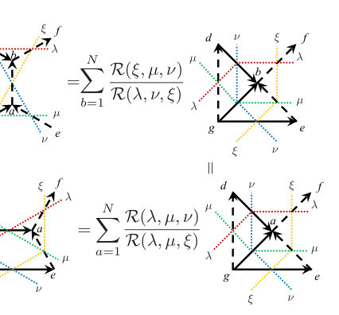
<figcaption class="paper-figure-caption"><b>Fig 3.</b> Figure 4: Diagrammatic proof of the star-star relation (56) using the STRs (52).</figcaption>
</figure>
</div>
<p><strong>Summary.</strong> The paper develops an advanced theory for the Yang-Baxter Equation governing the Chiral Potts Model and related parafermionic chains. It constructs a novel R-matrix dependent on three spectral parameters, demonstrating how onsite potentials modify integrability structures. This advances the understanding of exactly solvable quantum many-body systems in statistical mechanics.</p>
<p><strong>Why it may be interesting.</strong> This work provides a deep theoretical understanding of integrability in complex quantum spin systems (like CPM), offering mathematical tools (three-parameter R-matrices) applicable to modeling exotic quantum phases beyond simple nearest-neighbor interactions.</p>
<details>
<summary>Detailed structure</summary>
<p><strong>Main problem.</strong> The core problem is constructing a novel Yang-Baxter Equation (YBE) for R-matrices parameterized by three spectral parameters, extending integrability methods from vertex/edge models.</p>
<p><strong>Main result.</strong> A new YBE structure is derived for the Chiral Potts Model (CPM), showing how onsite potentials contribute an extra spectral parameter to the R-operator beyond standard nearest-neighbor interactions.</p>
<p><strong>Method.</strong> The derivation uses functional equations, star-triangle and star-star relations, and techniques involving elliptic functions and parafermion operators to ensure consistency with integrability conditions.</p>
<p><strong>Model / system.</strong> The study focuses on integrable lattice models, specifically the Chiral Potts Model (CPM), which generalizes the Ising model. The analysis involves constructing R-matrices and Boltzmann weights for these quantum spin chains.</p>
<p><strong>Key observables.</strong> Boltzmann Weights ($W_n$), R-matrix elements $R(\lambda, \mu, 
u)$, and the Hamiltonian structure derived from the transfer matrix.</p>
<p><strong>Important parameters / regimes.</strong> Three spectral parameters ($\lambda, \mu, 
u$) are central; coupling constants like onsite potential strength ($U$) and temperature/inverse temperature ($\kappa$) govern the physics.</p>
<p><strong>Assumptions / limitations.</strong> The analysis assumes that integrability can be characterized by satisfying generalized Yang-Baxter or star-star relations, extending known results from simpler models to parafermionic systems.</p>
<p><strong>Figures summary.</strong> Figures illustrate diagrammatic proofs of the star-star relation using star-triangle transformations and show the graphical structure of the YBE for the CPM.</p>
<p><strong>Paper structure.</strong> The paper builds by first establishing the general framework relating R-matrices to Boltzmann weights, then deriving specific functional forms for these weights in the CPM, verifying the consistency via the star-star relation, and finally generalizing the Hamiltonian description using parafermion operators.</p>
</details>
<details>
<summary>Abstract</summary>
<p>A new type of Yang-Baxter equation (YBE) for $R$-matrices parameterized by three spectral parameters is constructed from the star-triangle and star-star relations for the chiral Potts model. As the $Z_N$ symmetric generalization to the Ising model, its Boltzmann weights are known to depend on two variables describing a curve with genus larger than one for $N>2$, except for the self-dual point corresponding to the Fateev-Zamolodchikov chain. This combined with the fact that the quantum Hamiltonians of edge models like Ising contain both nearest neighbor interaction and onsite potential terms results in the extra spectral parameter of the $R$-operator. My construction extends the recent unification of solvable edge and vertex models which recasts Onsager's star-triangle relation from a mere alternative form of the YBE for edge models to its underlying ingredient.</p>
</details>
<p><sub><a href="#top">↑ back to top</a></sub></p>

<p><a id="paper-2606.10179"></a></p>
<h3 id="trainability-of-iqp-quantum-circuit-born-machines-under-gaussian-initialization"><a href="http://arxiv.org/abs/2606.10179v1">Trainability of IQP Quantum Circuit Born Machines Under Gaussian Initialization</a></h3>
<p><strong>Authors:</strong> Gennaro De Luca<br>
<strong>Type:</strong> theory · <strong>Category:</strong> quantum information and computing · <strong>PDF:</strong> <a href="https://arxiv.org/pdf/2606.10179v1">https://arxiv.org/pdf/2606.10179v1</a><br>
<strong>Analysis basis:</strong> full PDF text, analyzed in chunks</p>
<div class="figure-strip-hint">↔ Scroll figures horizontally</div>
<div class="paper-figures-scroll">
<figure class="paper-figure-card">
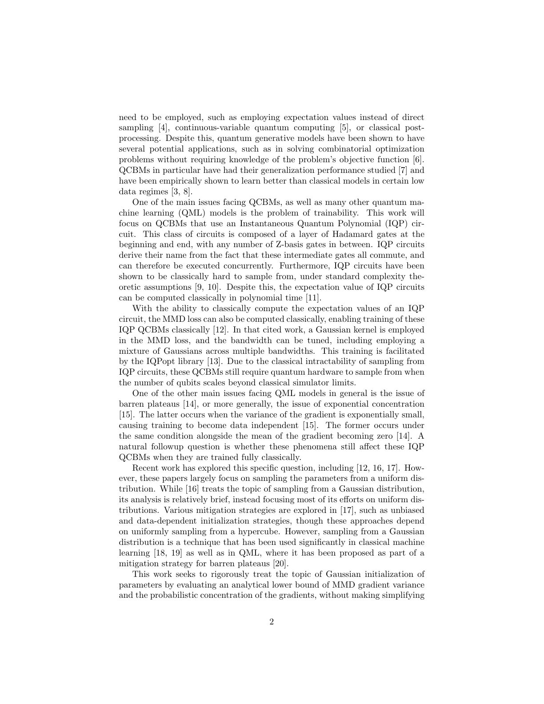
<figcaption class="paper-figure-caption"><b>Fig 1.</b> Low-resolution page preview, page 2</figcaption>
</figure>
<figure class="paper-figure-card">
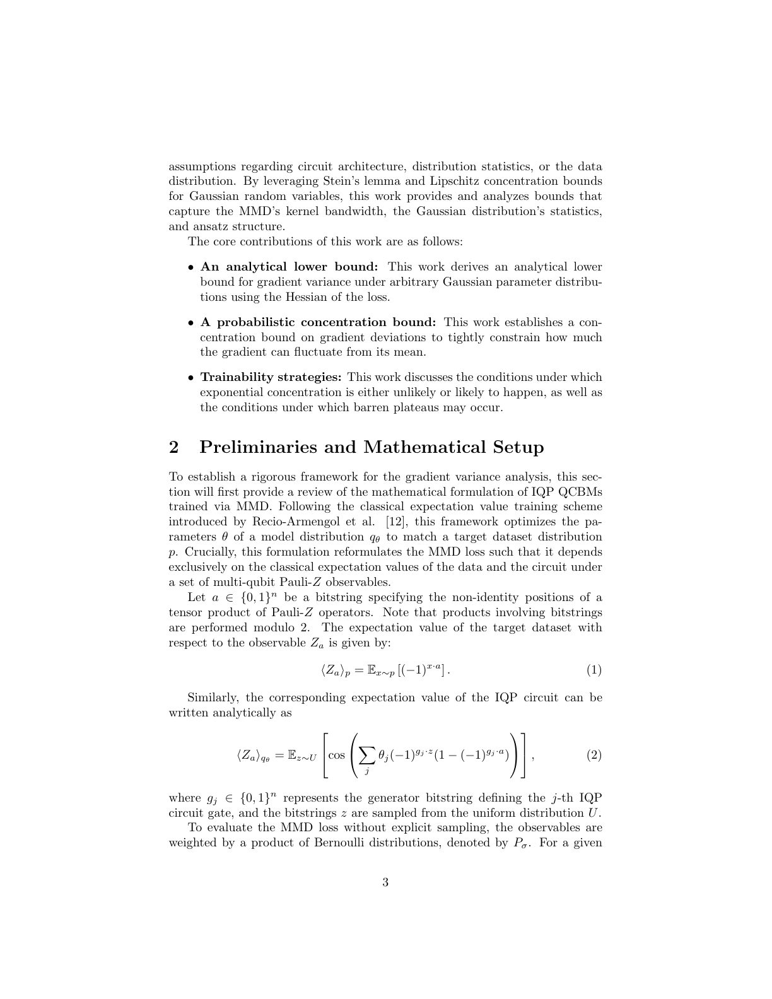
<figcaption class="paper-figure-caption"><b>Fig 2.</b> Low-resolution page preview, page 3</figcaption>
</figure>
<figure class="paper-figure-card">

<figcaption class="paper-figure-caption"><b>Fig 3.</b> Low-resolution page preview, page 4</figcaption>
</figure>
<figure class="paper-figure-card">

<figcaption class="paper-figure-caption"><b>Fig 4.</b> Low-resolution page preview, page 5</figcaption>
</figure>
<figure class="paper-figure-card">

<figcaption class="paper-figure-caption"><b>Fig 5.</b> Low-resolution page preview, page 6</figcaption>
</figure>
</div>
<p><strong>Summary.</strong> This paper provides a deep theoretical analysis into the trainability of Quantum Circuit Born Machines by bounding the variance and concentration of their gradients. It uses advanced tools from probability theory, such as Stein's lemma, to derive necessary scaling conditions on initialization parameters ($\sigma^2$, $\sigma_	heta^2$) that must be met to prevent gradient vanishing in quantum machine learning models.</p>
<p><strong>Why it may be interesting.</strong> The rigorous mathematical analysis of gradient behavior under specific initialization schemes is crucial for developing practical, scalable quantum machine learning algorithms that can overcome theoretical barriers like barren plateaus.</p>
<details>
<summary>Detailed structure</summary>
<p><strong>Main problem.</strong> The paper addresses the trainability issues, such as exponential concentration of gradients or barren plateaus, encountered when training Quantum Circuit Born Machines (QCBMs) using IQP circuits initialized with arbitrary Gaussian parameters.</p>
<p><strong>Main result.</strong> It derives analytical lower bounds for the gradient variance and establishes probabilistic concentration bounds, providing concrete scaling rules ($\sigma^2 = O(n)$, $\sigma_	heta^2 |\Gamma(a)| \approx O(1)$) to mitigate these exponential decay issues.</p>
<p><strong>Method.</strong> The analysis employs Stein's lemma and Lipschitz concentration bounds tailored for Gaussian random variables to rigorously bound the variance and deviation of the gradient calculated from the MMD loss function.</p>
<p><strong>Model / system.</strong> The model is a QCBM trained via MMD loss using IQP circuits. The training process involves calculating expectation values $\langle Z_a 
angle_{q_	heta}$ which depend on parameters $  heta$ initialized from a Gaussian distribution $N(\mu_	heta, \sigma^2_	heta)$.</p>
<p><strong>Key observables.</strong> Gradient variance ($   ext{Var}(\partial C / \partial  heta_k)$), gradient deviation bounds, and expectation values of Pauli-Z observables ($\langle Z_a 
angle$).</p>
<p><strong>Important parameters / regimes.</strong> MMD kernel bandwidth ($\sigma^2$), initialization variance ($\sigma_	heta^2$), ansatz connectivity measure ($|\Gamma(a)|$), and parameter mean ($\mu_	heta$).</p>
<p><strong>Assumptions / limitations.</strong> The analysis heavily relies on the assumption of Gaussian initialization for parameters $    heta$ and utilizes Stein's Lemma to derive bounds.</p>
<p><strong>Paper structure.</strong> The paper progresses by first reformulating the cost function, then deriving explicit expressions for the gradient and Hessian components using expectation identities. It culminates in applying concentration inequalities (like those derived from Gaussian properties) to establish necessary scaling conditions on $\sigma^2$, $\sigma_	heta^2$, and $\mu_	heta$ to maintain non-vanishing gradients.</p>
</details>
<details>
<summary>Abstract</summary>
<p>Quantum Circuit Born Machines (QCBMs) offer a natural approach to generative machine learning by leveraging the Born rule. Recent work has provided a method to classically train QCBMs with Instantaneous Quantum Polynomial (IQP) circuits via the Maximum Mean Discrepancy (MMD) loss. Despite the assumed intractability of sampling from IQP circuits classically, their expectation values can be computed classically, enabling training of these IQP QCBMs. However, quantum machine learning (QML) models have various other challenges, including trainability issues caused by exponential concentration or barren plateaus. While these issues have been explored for parameters sampled from a uniform distribution, little work has been done to rigorously treat the use of arbitrary Gaussian initialization schemes. This work leverages Stein's lemma and Lipschitz concentration bounds for Gaussian random variables to provide an analytical lower bound of the variance of the gradient and a probabilistic concentration bound of the deviation of the gradient from its mean. It discusses strategies to either avoid or encourage exponential concentration, as well as the conditions under which barren plateaus are more likely to occur.</p>
</details>
<p><sub><a href="#top">↑ back to top</a></sub></p>

<p><a id="paper-2606.10230"></a></p>
<h3 id="variational-approach-for-uniform-quantum-permutation-generators"><a href="http://arxiv.org/abs/2606.10230v1">Variational Approach for Uniform Quantum Permutation Generators</a></h3>
<p><strong>Authors:</strong> Farzam Nosrati, Nicolás Borrajo, Antonio Fernández Anta, Vincenzo Mancuso<br>
<strong>Type:</strong> theory · <strong>Category:</strong> quantum information and computing · <strong>PDF:</strong> <a href="https://arxiv.org/pdf/2606.10230v1">https://arxiv.org/pdf/2606.10230v1</a><br>
<strong>Analysis basis:</strong> full PDF text, analyzed in chunks</p>
<div class="figure-strip-hint">↔ Scroll figures horizontally</div>
<div class="paper-figures-scroll">
<figure class="paper-figure-card">

<figcaption class="paper-figure-caption"><b>Fig 1.</b> FIG. 1. Three-stage variational quantum-circuit construction for uniform permutation generation. (i) Each candidate swap ˆUi j is realized by a parameterized controlled-SWAP (PCS) gate, with the control qubit prepared by ˆRy(θ). (ii) The PCS-layer architecture is determined by an interaction graph G = (V, E); at each layer ℓ, an ordered subset Mℓ⊆E is chosen to specify the active PCS operations. Gray edges represent admissible interactions, and red edges the selected ones. (iii) For the fixed layered architecture, the variational parameters are optimized by minimizing L(Θ), so that the resulting channel approximates the target uniform permutation map.</figcaption>
</figure>
<figure class="paper-figure-card">

<figcaption class="paper-figure-caption"><b>Fig 2.</b> FIG. 2. Recursive construction of the non-swap probability matrices Mn and their corresponding linear-topology circuits. (Top) Examples for n = 2, 3, 4, 5 are shown. Each Mn is obtained from the upper and lower blocks inherited from Mn−1, shown in blue and gray, together with two newly added anti-diagonals, shown in red. For even n, the numbered anti-diagonal starts with even entries 2, . . . , n followed by odd entries n −1, . . . , 3, while the other anti-diagonal contains only 1s. For odd n, the roles of the two anti-diagonals are interchanged. (Bottom) The associated quantum circuits implementing the same recursive linear topology.</figcaption>
</figure>
<figure class="paper-figure-card">

<figcaption class="paper-figure-caption"><b>Fig 3.</b> FIG. 3. Projection-loss optimization for the line-topology PCS ansatz on S 8. The best run over multiple random initializations reaches a residual of order 10−16.</figcaption>
</figure>
<figure class="paper-figure-card">

<figcaption class="paper-figure-caption"><b>Fig 4.</b> FIG. 4. Quantum Beneš circuit for n = 8.</figcaption>
</figure>
<figure class="paper-figure-card">

<figcaption class="paper-figure-caption"><b>Fig 5.</b> FIG. 5. Optimization of the projection loss Lproj for the selected PCS swap sequence. The curve shows the best run over multiple random initializations. The finite residual indicates that the ansatz cannot exactly realize the symmetric projector, and therefore does not implement the uniform permutation average over S 8.</figcaption>
</figure>
</div>
<p><strong>Summary.</strong> This paper introduces a variational quantum circuit approach to generate uniform random permutations on $n$ qubits under realistic nearest-neighbor hardware constraints. It successfully constructs an efficient linear-depth circuit achieving exact uniformity, while rigorously proving that other known universal circuits fail this strict requirement.</p>
<p><strong>Why it may be interesting.</strong> This work provides a concrete, hardware-aware roadmap for implementing fundamental quantum tasks like random sampling, which is crucial for building fault-tolerant quantum algorithms and simulating complex many-body dynamics where connectivity matters.</p>
<details>
<summary>Detailed structure</summary>
<p><strong>Main problem.</strong> The paper addresses the challenge of implementing uniform random permutation generation over $S_n$ using quantum circuits while respecting physical hardware connectivity constraints.</p>
<p><strong>Main result.</strong> A variational circuit framework was developed that achieves exact uniformity with linear depth, $O(n)$, on linear nearest-neighbor topologies, significantly improving upon previous all-to-all constructions. Furthermore, it proves that certain architectures (like the quantum Beneš circuit) can realize permutations but fail to generate a uniform distribution.</p>
<p><strong>Method.</strong> The authors utilize Variational Quantum Circuits (VQC) parameterized by angles ($\Theta$) and optimize them using projection loss functions ($L_{proj}$) to enforce the target state being proportional to the symmetric projector $\Pi_{sym}$.</p>
<p><strong>Model / system.</strong> The system is a set of $n$ qubits representing subsystems whose permutations are generated by controlled-SWAP gates. The analysis focuses on circuit architectures constrained to linear nearest-neighbor interactions.</p>
<p><strong>Key observables.</strong> Circuit size (controlled-SWAP count), circuit depth, and the minimization of the projection loss function ($L_{proj}$) towards zero.</p>
<p><strong>Important parameters / regimes.</strong> The system size $n$, the variational parameters $\Theta$, and the connectivity graph structure (e.g., linear chain).</p>
<p><strong>Assumptions / limitations.</strong> It is conjectured that exact uniform generation requires circuit size $\Omega(n^2)$ and depth $\Omega(n)$ for local architectures, contrasting with the logarithmic depth of universal but non-uniform circuits.</p>
<p><strong>Figures summary.</strong> Figures illustrate the three-stage VQC construction (PCS gates in layers), the recursive structure of the linear quantum circuit ($M_n$), and convergence plots showing loss function minimization for different topologies.</p>
<p><strong>Paper structure.</strong> The paper first establishes the problem using a general variational framework, then details the specific construction for linear nearest-neighbor topology achieving $O(n)$ depth. It contrasts this with the Beneš network, proving its inherent non-uniformity, and concludes by establishing complexity separations between mere realizability and true uniform sampling.</p>
</details>
<details>
<summary>Abstract</summary>
<p>Uniform permutation generation is a fundamental task in both classical and quantum computation, with applications ranging from cryptography to quantum optimization and quantum error correction. Existing exact quantum constructions typically require all-to-all qubit connectivity and quadratic circuit depth. We develop a variational quantum circuit framework for uniform permutation generation under connectivity constraints, in which the circuit architecture is determined by the underlying interaction graph and the variational parameters are optimized to enforce the target permutation statistics. In particular, we present explicit controlled-SWAP-based unitary constructions that achieve exact uniformity with quadratic circuit size and linear depth \(O(n)\) on linear nearest-neighbor topologies. Our approach, therefore, removes the need for all-to-all connectivity while improving the depth of previous exact constructions by a factor. We further prove that a quantum Beneš-like architecture is intrinsically non-uniform. Despite its logarithmic depth and ability to realize any permutation it cannot generate a uniform distribution over permutations for any choice of variational parameters. These results clarify the role of circuit topology in exact permutation generation and identify variational quantum circuits as a natural framework for hardware-constrained uniform sampling. More broadly, this work suggests that exact uniform permutation generation is a strictly stronger requirement than mere permutation realizability, and lays the groundwork for a formal complexity separation between the two.</p>
</details>
<p><sub><a href="#top">↑ back to top</a></sub></p>
</details>
<h2 id="secondary-cond-mat-archives">Secondary cond-mat archives</h2>
<p><em>Papers from cond-mat.mtrl-sci, mes-hall, other, soft, supr-con. These archives are de-prioritized — they appear at the end regardless of relevance score.</em></p>
<h3 id="relevant-in-secondary-archives-19">Relevant in secondary archives (19)</h3>

<p><a id="paper-2606.10355"></a></p>
<h3 id="mean-field-models-for-morphogenetic-processes-in-physiological-contexts"><a href="http://arxiv.org/abs/2606.10355v1">Mean-field models for morphogenetic processes in physiological contexts</a></h3>
<p><strong>Authors:</strong> D. Hernández, Alejandro Valdés López, E. C. Herrera-Hernández<br>
<strong>Type:</strong> theory · <strong>Category:</strong> statistical mechanics · <strong>PDF:</strong> <a href="https://arxiv.org/pdf/2606.10355v1">https://arxiv.org/pdf/2606.10355v1</a><br>
<strong>Analysis basis:</strong> full PDF text, analyzed in chunks
<strong>Topic relevance:</strong> 🔥 <code>non-equilibrium dynamics</code> <strong>4/5</strong> · <code>Keldysh / 2PI / non-Gaussian methods</code> <strong>3/5</strong> · <code>driven-dissipative phase transition</code> <strong>3/5</strong> · <code>methods for driven-dissipative</code> <strong>3/5</strong> · <code>non-equilibrium universality</code> <strong>3/5</strong> · <code>analog quantum simulation</code> <strong>2/5</strong> · <code>correlated / nonlocal dissipation</code> <strong>2/5</strong> · <code>Frenkel-Kontorova</code> <strong>1/5</strong> · <code>Kondo &amp; dissipative impurity</code> <strong>1/5</strong> · <code>correlated cavity matter</code> <strong>1/5</strong> · <code>entanglement &amp; information structure</code> <strong>1/5</strong></p>
<div class="figure-strip-hint">↔ Scroll figures horizontally</div>
<div class="paper-figures-scroll">
<figure class="paper-figure-card">

<figcaption class="paper-figure-caption"><b>Fig 1.</b> Figure 1: Tissues visual representation. (a) Non-percolating tissue, e.g. blood; (b) Percolating tissue, e.g. specific types of epithelial tissue; (c) Bi-percolating tissue, e.g. cardiac tissue. In cardiac tissue intercalated discs are specialized structures that includes gap junctions and connect muscle cells [28].</figcaption>
</figure>
<figure class="paper-figure-card">

<figcaption class="paper-figure-caption"><b>Fig 2.</b> Figure 2: Schematic analogy between a non-percolating biological tissue composed of discrete cells and a geological double-porosity medium. Cells play the role of the solid matrix, while the interconnected extracellular space corresponds to the fracture network, which governs transport processes.</figcaption>
</figure>
<figure class="paper-figure-card">

<figcaption class="paper-figure-caption"><b>Fig 3.</b> Figure 3: Examples of Turing patterns with zero flux boundary conditions and different types of spatial heterogeneity. (a) Schnakenberg model on a homogeneous domain as studied in [44]. (b) BVAM model exhibiting self-similar patterns due to radius-dependent diffusion coefficients [42, 45]. (c) Schnakenberg with anisotropic space-dependent reaction kinetics [19]; and (d) Two Brusselator models featuring cubic nonlinear diffusive coupling, as analyzed in [41]. The parameters value for each model and figure are provided in the cited works.</figcaption>
</figure>
<figure class="paper-figure-card">

<figcaption class="paper-figure-caption"><b>Fig 4.</b> Figure 4: Real (continuous lines) and imaginary (dashed lines) parts of the dispersion relation for different values of relevant model parameters. For both subfigures, the parameters were a = 0.07, b = 1.34, c = 0.05, γ = 100, du,i = 0.01, dv,i = 0.01, and the fixed point was calculated numerically, coinciding to four significant figures to (u∗ i , v∗ i , u∗ o, v∗ o) = (1.342, 0.741, 0.067, 0.740).</figcaption>
</figure>
<figure class="paper-figure-card">

<figcaption class="paper-figure-caption"><b>Fig 5.</b> Figure 5: Example of a Turing pattern under conditions where the activator diffuses faster than the inhibitor (d &lt; 1). The parameters used in the simulation were a = 0.07, b = 1.34, c = 0.05, e = 4, d = 0.8, γ = 100, du,i = 0.01, dv,i = 0.01. Zero-flux boundary conditions were imposed, and the fixed point is (u∗ i , v∗ i , u∗ o, v∗ o) = (1.34288, 0.74123, 0.06712, 0.74039).</figcaption>
</figure>
</div>

<p><strong>Summary.</strong> This work establishes a rigorous biophysical model for morphogen dynamics in tissues by explicitly accounting for tissue compartmentalization and non-equilibrium processes. It uses coupled reaction-diffusion equations to predict pattern formation, showing that structural details can significantly alter the conditions required for classic instabilities like Turing patterns.</p>
<p><strong>Why it may be interesting.</strong> While focused on biology, the mathematical machinery—analyzing non-equilibrium dynamics via reaction-diffusion systems and pattern formation (Turing mechanisms)—is highly relevant to open quantum systems and complex many-body physics far from equilibrium.</p>
<details>
<summary>Detailed structure</summary>
<p><strong>Main problem.</strong> To develop a biophysical formalism describing the spatiotemporal evolution of chemical profiles (morphogens) in tissues while accounting for tissue compartmentalization and non-equilibrium maintenance.</p>
<p><strong>Main result.</strong> The framework successfully models pattern formation, showing that Turing instabilities can occur even when standard conditions are violated (e.g., activator diffusing faster than inhibitor), expanding the parameter space for morphogenesis.</p>
<p><strong>Method.</strong> Derivation of coupled reaction-diffusion equations from conservation laws and chemical kinetic theory, incorporating explicit spatial structure via intracellular/extracellular domains.</p>
<p><strong>Model / system.</strong> The system models morphogen dynamics in tissues, distinguishing between non-percolating, percolating, and bi-percolating structures. The governing equations couple intra- and extracellular diffusion, reaction kinetics (like Schnakenberg), and membrane transport processes.</p>
<p><strong>Key observables.</strong> Morphogen densities ($
ho_A, \dots$), Turing patterns, characteristic length scales, and the stability of steady states.</p>
<p><strong>Important parameters / regimes.</strong> Diffusion coefficients ($d_{J,i}, d_{J,o}$), reaction rates ($\alpha_j, eta_{j,k}$), membrane permeability ($e$), and spatial heterogeneity functions.</p>
<p><strong>Assumptions / limitations.</strong> The model uses mean-field approximations for complex tissue structures; it assumes the physico-chemical state is determined by average molecular densities.</p>
<p><strong>Figures summary.</strong> Figures illustrate examples of Turing patterns under zero flux boundary conditions, show dispersion relations mapping bifurcation parameters (like membrane permeability and diffusion ratios), and demonstrate pattern formation when activator diffuses faster than inhibitor.</p>
<p><strong>Paper structure.</strong> The paper builds from general biophysical formalism to specific coupled reaction-diffusion equations. It analyzes the linear stability of steady states to predict Turing instabilities, demonstrating how structural details modify classical pattern formation criteria.</p>
</details>
<details>
<summary>Abstract</summary>
<p>This work introduces a biophysical formalism to describe the spatiotemporal evolution of the chemical profile in tissues, with the novelty of modeling tissue compartmentalization and the mechanism by which cells maintain the system far from thermodynamic equilibrium via production and/or degradation of substances. The models were derived from conservation laws, chemical kinetic theory, and geometric constraints, while considering fundamental properties of tissues to connect theoretical modeling with experimental observations. In a morphogenetic context, each morphogen is described by two coupled reaction-diffusion equations, representing intra- and extracellular dynamics, linked through membrane transport processes such as nonlinear, cross, and anomalous diffusion. We explore the models' morphogenetic potential through diffusion-driven instabilities and discuss how natural tissue heterogeneities influence Turing instabilities and self-organized phenomena. The mathematical structure reveals that two-morphogen systems can produce Turing patterns with multiple characteristic length scales, while the system's dimensionality enables chaotic behavior in well-mixed dynamics. Moreover, due to domain coupling, Turing instabilities are allowed for single-morphogen systems. We used Schnakenberg kinetics to demonstrate that Turing patterns arise even when the activator diffuses faster than the inhibitor (d$&lt;$1), thereby expanding the parameter space for pattern formation. Our results suggest that tissue spatial structure has important consequences for Turing instability mechanisms, in some cases weakening the usual conditions for its emergence while widening the possible patterns it can produce. The proposed framework offers a minimal mathematical basis to explore emergent dynamics in biological and synthetic contexts, with potential applications in developmental biology and tissue engineering.</p>
</details>
<p><sub><a href="#top">↑ back to top</a></sub></p>

<p><a id="paper-2606.10754"></a></p>
<h3 id="spin-polarisation-signatures-of-fractionally-charged-skyrmions-in-fractional-quantum-hall-states"><a href="http://arxiv.org/abs/2606.10754v1">Spin polarisation signatures of Fractionally Charged Skyrmions in Fractional Quantum Hall states</a></h3>
<p><strong>Authors:</strong> Odysseas Williams, Stefan Faelt, Christian Reichl, Werner Wegscheider<br>
<strong>Type:</strong> experiment · <strong>Category:</strong> strongly correlated electrons · <strong>PDF:</strong> <a href="https://arxiv.org/pdf/2606.10754v1">https://arxiv.org/pdf/2606.10754v1</a><br>
<strong>Analysis basis:</strong> full PDF text, analyzed in chunks
<strong>Topic relevance:</strong> 🔥 <code>exotic spin models in light-matter</code> <strong>4/5</strong> · <code>analog quantum simulation</code> <strong>3/5</strong> · <code>correlated cavity matter</code> <strong>3/5</strong> · <code>spintronics-quantum-optics interface</code> <strong>3/5</strong> · <code>Tavis-Cummings &amp; cavity-many-emitter</code> <strong>2/5</strong> · <code>quantum optics experiment</code> <strong>2/5</strong> · <code>correlated / nonlocal dissipation</code> <strong>1/5</strong> · <code>driven-dissipative phase transition</code> <strong>1/5</strong> · <code>entanglement &amp; information structure</code> <strong>1/5</strong> · <code>methods for driven-dissipative</code> <strong>1/5</strong> · <code>quantum measurements</code> <strong>1/5</strong></p>
<div class="figure-strip-hint">↔ Scroll figures horizontally</div>
<div class="paper-figures-scroll">
<figure class="paper-figure-card">

<figcaption class="paper-figure-caption"><b>Fig 1.</b> FIG. 1. (a) Optical transfer-matrix simulations used to design devices 2λ and 3λ. Only the layers nearest to the central cavity are shown. Blue, green, and yellow layers correspond to AlAs, Al0.1Ga0.9As and GaAs, respectively. The red curve corresponds to the electric field intensity of a confined resonant photon. Numbers next to each layer indicate layer thicknesses (nm); the single differing value highlights the design change in device 3λ. (b) 1 −R spectra of sample 2λ as a function of perpendicular magnetic field B. New polariton branches and changes in polariton splitting associated with integer and fractional ν are marked by white dashed lines. (c) Same measurement for sample 3λ....</figcaption>
</figure>
<figure class="paper-figure-card">

<figcaption class="paper-figure-caption"><b>Fig 2.</b> FIG. 2. Lowest polariton energy in sample 2λ as a function of magnetic field B, measured at low (blue) and high (red) optical powers differing by a factor of 1.2×104. Integer filling factors corresponding to maxima and minima are labelled in black.</figcaption>
</figure>
<figure class="paper-figure-card">

<figcaption class="paper-figure-caption"><b>Fig 3.</b> FIG. 3. Three lowest excitation energies E0, E1, and E2 measured in σ−polarisation for sample 2λ in the range 4 T &lt; B &lt; 8 T and sample 3λ in the range 2 T &lt; B &lt; 6.7 T. The schematic on the right illustrates the proposed interpretation: each excitation originates from a different hole subband (0H, 1H, or 2H) and forms an exciton (cross symbol) whose electron component occupies one of the two spin-split lowest LLs. Filled circles denote background electrons and empty circles holes; the illustrated configuration corresponds to an unpolarised ν = 2/3 state. The lowest-energy excitation forms a negative trion, in which a |↑⟩exciton binds a |↓⟩electron.</figcaption>
</figure>
<figure class="paper-figure-card">

<figcaption class="paper-figure-caption"><b>Fig 4.</b> FIG. 4. Coupling energies Ω0, Ω1, and Ω2 measured for sam- ples (a) 2λ and (b) 3λ. These values are extracted from the same measurements as Fig. 3, with matching colour schemes between figures. Vertical black lines indicate filling factors ν = 2/3, 3/5, and 4/7 (from left to right).</figcaption>
</figure>
<figure class="paper-figure-card">

<figcaption class="paper-figure-caption"><b>Fig 5.</b> FIG. 5. Spin polarisation P for samples 2λ (blue) and 3λ (red), extracted from the Ω0 measurements of Fig. 4 using Eq. 7. The accompanying diagrams show the corresponding CF configurations: top panels represent fully polarised states, bottom panels partially polarised states. The expected partial polarisations of the ν = 3/5 and 4/7 states, P = 1/3 and 1/2, are indicated by black dotted lines.</figcaption>
</figure>
</div>

<p><strong>Summary.</strong> This work uses cavity-polariton spectroscopy on GaAs quantum wells to measure spin polarization in Fractional Quantum Hall states. By analyzing the optical response, the authors report that the depolarization away from quantized fillings strongly suggests the presence of Minimal Fractionally Charged Skyrmions (MFCS). This provides experimental evidence for collective spin dynamics in highly correlated electron systems.</p>
<p><strong>Why it may be interesting.</strong> The connection drawn between optical measurements in solid-state systems (GaAs QWs) and exotic topological excitations like Skyrmions provides a tangible experimental realization of complex many-body physics relevant to correlated electron models.</p>
<details>
<summary>Detailed structure</summary>
<p><strong>Main problem.</strong> The study investigates spin polarization and low-energy excitations within Fractional Quantum Hall (FQH) states.</p>
<p><strong>Main result.</strong> The research reports evidence for Minimal Fractionally Charged Skyrmions (MFCS), characterized by a depolarization following the empirical law $S=
u^*$ away from quantized fillings.</p>
<p><strong>Method.</strong> Spin polarization is probed using cavity-polariton spectroscopy on GaAs quantum wells, measuring the optical coupling strength of interband Landau-level excitations.</p>
<p><strong>Model / system.</strong> The system involves electrons in Fractional Quantum Hall states ($
u$ between $1/3$ and $1$), analyzed within the framework of Composite Fermion (CF) theory. The experiment uses GaAs quantum wells coupled to optical microcavities.</p>
<p><strong>Key observables.</strong> Spin polarization ($P$), oscillator strength suppression, and the depolarization parameter $S$.</p>
<p><strong>Important parameters / regimes.</strong> Fractional filling factor $
u$ ($1/3 \le 
u \le 1$), effective Composite Fermion filling factor ($
u^*$), and magnetic field ($B$).</p>
<p><strong>Assumptions / limitations.</strong> The analysis assumes that the depolarization away from quantized fillings is governed by the formation of Minimal Fractionally Charged Skyrmions (MFCS).</p>
<p><strong>Figures summary.</strong> Figures show optical transfer-matrix simulations, lowest polariton energy vs. $B$, and plots of extracted spin polarization ($P$) versus filling factor ($
u$ or $
u^*$), comparing data to theoretical models.</p>
<p><strong>Paper structure.</strong> The paper progresses by first establishing the experimental measurement technique (polariton spectroscopy) to extract spin polarization signatures across various FQH states, then analyzing the depolarization behavior away from integer/fractional fillings, and finally interpreting this smooth variation as evidence for MFCS formation governed by $S=
u^*$.</p>
</details>
<details>
<summary>Abstract</summary>
<p>We investigate spin polarisation and low-energy excitations in fractional quantum Hall (FQH) states using cavity-polariton spectroscopy of high-mobility GaAs quantum wells. By measuring the optical coupling strength of interband Landau-level excitations over the range $1/3 \le ν\le 1$, we extract the spin polarisation of the electron system as a function of filling factor.   Complete suppression of the oscillator strength of the lowest energy excitation, characteristic of singlet trion formation in fully polarised systems, is reported for the first time in this regime.   At large magnetic fields, fully polarised FQH states exhibit symmetric depolarisation away from their quantised fillings, analogous to Skyrmionic behaviour near $ν=1$. The depolarisation follows an empirical law $S=ν^*$, where $S$ is the number of spin flips per added magnetic flux quantum and $ν^*$ the effective Composite Fermion filling factor. We interpret this behaviour as evidence for Minimal Fractionally Charged Skyrmions (MFCS) formed from bound spin-flip and quasiparticle excitations.</p>
</details>
<p><sub><a href="#top">↑ back to top</a></sub></p>

<p><a id="paper-2606.10854"></a></p>
<h3 id="magnetism-and-topology-from-circularly-polarized-phonon-floquet-engineering"><a href="http://arxiv.org/abs/2606.10854v1">Magnetism and Topology from Circularly Polarized Phonon Floquet Engineering</a></h3>
<p><strong>Authors:</strong> Dapeng Yao, Tiantian Zhang, Takashi Oka, Takehito Yokoyama<br>
<strong>Type:</strong> theory · <strong>Category:</strong> other · <strong>PDF:</strong> <a href="https://arxiv.org/pdf/2606.10854v1">https://arxiv.org/pdf/2606.10854v1</a><br>
<strong>Analysis basis:</strong> full PDF text, analyzed in chunks
<strong>Topic relevance:</strong> 🔥 <code>analog quantum simulation</code> <strong>4/5</strong> · 🔥 <code>non-equilibrium dynamics</code> <strong>4/5</strong> · <code>exotic spin models in light-matter</code> <strong>3/5</strong> · <code>spintronics-quantum-optics interface</code> <strong>3/5</strong> · <code>driven-dissipative phase transition</code> <strong>2/5</strong> · <code>methods for driven-dissipative</code> <strong>2/5</strong> · <code>Keldysh / 2PI / non-Gaussian methods</code> <strong>1/5</strong> · <code>non-equilibrium universality</code> <strong>1/5</strong></p>
<div class="figure-strip-hint">↔ Scroll figures horizontally</div>
<div class="paper-figures-scroll">
<figure class="paper-figure-card">

<figcaption class="paper-figure-caption"><b>Fig 1.</b> FIG. 1. Schematic of the phonon-driven electron systems on a two-dimensional honeycomb lattice, where a circularly polar- ized phonon in optical branches at the Brillouin-zone center is excited. Electron-phonon coupling enables phonon-assisted nearest-neighbor hopping via phonon emission and absorption processes, which generates an effective next-nearest-neighbor hopping. This process drives the system to a topological phase with a nonzero Chern number. Spin and orbital magnetiza- tions emerge due to the breaking of time-reversal symmetry by circularly polarized phonons.</figcaption>
</figure>
<figure class="paper-figure-card">

<figcaption class="paper-figure-caption"><b>Fig 2.</b> FIG. 2. Topological phase transition driven by circularly po- larized phonons. (a) Band structures of the spinless effective Hamiltonian heff(k) along the high-symmetry points with and without phonon dynamics. We set the on-site potential δ = 0, and the phonon rotational amplitude ur = 0.1a0, respectively. Inset shows the bands near the K point. (b) Phase diagram of the Chern number as a function of ur/a0 and δ/t0. (c) Band structure of the spinful Hamiltonian Heff(k) with the on-site potential δ = 0.005t0, Rashba SOC λR = 0.4t0, and the phonon rotational amplitude ur/a0 = 5%. Inset shows the bands around the valley points. (d) Phase diagram of the Chern number as a function of ur/a0 and...</figcaption>
</figure>
<figure class="paper-figure-card">

<figcaption class="paper-figure-caption"><b>Fig 3.</b> FIG. 3. Orbital magnetization driven by circularly polarized phonons. (a-1) and (a-2) Intrinsic magnetic moment distri- bution for the valence band along the high-symmetry points. (b-1) and (b-2) Berry curvature distribution for the valence band along the high-symmetry points. The results without phonon dynamics are shown in (a-1) and (b-1), and those with phonon dynamics for different Chern numbers are shown in (a-2) and (b-2). Red and blue lines in (a-2) and (b-2) rep- resent ur/a0 = 6% (C = 0) and ur/a0 = 10% (C = −1), respectively. (c-1) and (c-2) Chemical potential dependence of the z component of the orbital magnetization. (c-2) en- larges the region around the band gap. Phonon energy...</figcaption>
</figure>
<figure class="paper-figure-card">

<figcaption class="paper-figure-caption"><b>Fig 4.</b> FIG. 4. Spin magnetization driven by circularly polarized phonons. (a) and (b) Chemical potential dependence of the z-component spin expectation value with the colors repre- senting the Rashba SOC and phonon rotational amplitude, respectively. The on-site potential is set to be δ = 0.02t0. We fix the phonon rotational amplitude ur/a0 = 10% in (a) and the Rashba SOC λR = 0.4t0 in (b). (c) Band structure with the on-site potential δ = 0.02t0, the phonon rotational am- plitude ur/a0 = 8%, and the Rashba SOC λR = 0.4t0. The color represents the spin texture ⟨ˆSz⟩nk/(ℏ/2) of each band at k point. Phonon energy and temperature are set to be ℏΩ= 0.2t0 and kBT = 0.03t0, respectively.</figcaption>
</figure>
</div>

<p><strong>Summary.</strong> This theoretical paper shows that coupling electrons on a honeycomb lattice to circularly polarized phonons can act as an effective magnetic field. By employing Floquet engineering, the system undergoes a controllable topological phase transition into a Chern insulator. This mechanism not only generates non-zero orbital and spin magnetizations but also provides a novel pathway for realizing topological materials using purely vibrational driving.</p>
<p><strong>Why it may be interesting.</strong> This work is highly relevant as it uses time-periodic driving (Floquet engineering) in condensed matter systems—a core topic in AMO physics—to engineer fundamental quantum properties like topology and magnetism using lattice vibrations rather than external magnetic fields.</p>
<details>
<summary>Detailed structure</summary>
<p><strong>Main problem.</strong> The study demonstrates how circularly polarized phonons can induce electronic magnetization and drive a topological phase transition in a honeycomb lattice via phonon Floquet engineering.</p>
<p><strong>Main result.</strong> Circularly polarized phonons act as an effective magnetic field, inducing a tunable topological phase transition from a trivial insulator to a Chern insulator, while also generating measurable orbital and spin magnetizations.</p>
<p><strong>Method.</strong> The authors utilize Floquet theory in the high-frequency limit ($\Omega^{-1}$) to derive an effective Hamiltonian that incorporates phonon-mediated hopping terms, allowing for gap analysis at valley points.</p>
<p><strong>Model / system.</strong> The model consists of electrons on a two-dimensional honeycomb lattice coupled to time-periodic driving from circularly polarized phonons. The physics is analyzed using the derived Floquet effective Hamiltonian, which generates an effective next-nearest-neighbor hopping term.</p>
<p><strong>Key observables.</strong> Chern number ($C$), orbital magnetization ($M_z$), and spin magnetization ($\langle S_z 
angle$).</p>
<p><strong>Important parameters / regimes.</strong> Phonon frequency ($\Omega$), lattice parameters ($t_0, \delta$), and the strength of Rashba SOC ($\lambda_R$).</p>
<p><strong>Assumptions / limitations.</strong> The analysis relies on a van-Vleck type expansion in the inverse phonon frequency ($\Omega^{-1}$) for the effective Hamiltonian derivation.</p>
<p><strong>Figures summary.</strong> Figures illustrate band structures showing gap opening due to phonons, phase diagrams mapping the Chern number dependence on SOC strength and phonon amplitude, and schematics of the induced NNN hopping term.</p>
<p><strong>Paper structure.</strong> The paper builds from defining the initial electron-phonon coupled Hamiltonian to deriving the high-frequency effective Floquet Hamiltonian. It then analyzes the resulting band structure near valley points to calculate topological invariants (Chern number) and magnetizations, concluding with a discussion of how phonon pumping controls these signs.</p>
</details>
<details>
<summary>Abstract</summary>
<p>We theoretically show that circularly polarized phonons induce electronic magnetization and drive a topological phase transition via phonon Floquet engineering. Considering the electronic states modulated by circularly polarized phonons on a honeycomb lattice, we show that such lattice dynamics generates an effective next-nearest-neighbor electron hopping, leading to a Haldane-type mass term. Circularly polarized phonon breaks time-reversal symmetry (TRS) and opens a gap at valley points, undergoing phase transition from a trivial insulator to a Chern insulator. Moreover, the orbital and spin magnetizations emerge due to the breaking of TRS. Our results show that circularly polarized phonons serve as an effective magnetic field to engineer magnetism and topology, offering new opportunities for phonon Floquet approaches.</p>
</details>
<p><sub><a href="#top">↑ back to top</a></sub></p>

<p><a id="paper-2606.10001"></a></p>
<h3 id="fabry-perot-interference-g-factor-anisotropy-and-gate-tunable-quantum-dot-in-chiral-tellurium-nanowires"><a href="http://arxiv.org/abs/2606.10001v1">Fabry-Perot Interference, g-factor Anisotropy, and Gate-Tunable Quantum dot in Chiral Tellurium Nanowires</a></h3>
<p><strong>Authors:</strong> Suresh Ghimire, Mohammad Hafijur Rahaman, Nathan Tanner Sawyers, Madan Mohan Bhandari, Gokul Acharya, Syed Zulfiqar Hussain Shah, Iris Nandhakumar, Pawan Kumar, Zainul Aabdin Khan, Hugh O. H. Churchill, Dharmraj Kotekar-Patil<br>
<strong>Type:</strong> experiment · <strong>Category:</strong> quantum information and computing · <strong>PDF:</strong> <a href="https://arxiv.org/pdf/2606.10001v1">https://arxiv.org/pdf/2606.10001v1</a><br>
<strong>Analysis basis:</strong> full PDF text, analyzed in chunks
<strong>Topic relevance:</strong> 🔥 <code>QC/QI experiment</code> <strong>4/5</strong> · <code>spintronics-quantum-optics interface</code> <strong>3/5</strong> · <code>Kondo &amp; dissipative impurity</code> <strong>1/5</strong> · <code>interference shaping light</code> <strong>1/5</strong> · <code>non-equilibrium dynamics</code> <strong>1/5</strong></p>
<div class="figure-strip-hint">↔ Scroll figures horizontally</div>
<div class="paper-figures-scroll">
<figure class="paper-figure-card">

<figcaption class="paper-figure-caption"><b>Fig 1.</b> Figure 1. Hydrothermal Te NWs: morphology, crystal structure and Raman signatures. (a) Low-</figcaption>
</figure>
<figure class="paper-figure-card">

<figcaption class="paper-figure-caption"><b>Fig 2.</b> Figure 2. Temperature-dependent transport of a single Te NW FET. (a) Conductance G versus back-</figcaption>
</figure>
<figure class="paper-figure-card">

<figcaption class="paper-figure-caption"><b>Fig 3.</b> Figure 3. Fabry–Pérot interference in a single TeNW. (a) Transconductance as a function of source-</figcaption>
</figure>
<figure class="paper-figure-card">

<figcaption class="paper-figure-caption"><b>Fig 4.</b> Figure 6. Gate-controlled quantum-dot size in a dual-gated TeNW. (a) SEM image of the dual-gated</figcaption>
</figure>
</div>

<p><strong>Summary.</strong> This work characterizes tellurium nanowires as promising platforms for quantum electronics by demonstrating phase-coherent transport regimes (Fabry-Perot interference and Coulomb blockade). Key findings include measuring large g-factor anisotropy and resolving an intrinsic spin-orbit coupling gap. These results position Te NWs for use in gate-defined spin qubits and topological superconducting research.</p>
<p><strong>Why it may be interesting.</strong> The combination of large, tunable g-factors and intrinsic SOC in an elemental vdW system makes this material highly relevant for solid-state qubits, offering a platform to study spin physics without relying on complex heterostructures.</p>
<details>
<summary>Detailed structure</summary>
<p><strong>Main problem.</strong> To explore quantum coherent transport, g-factor anisotropy, and gate-tunable quantum dot formation in chiral tellurium nanowires.</p>
<p><strong>Main result.</strong> The study demonstrated highly anisotropic Lande g-factors ($g_{\perp} \gg g_{\parallel}$) and intrinsic spin-orbit coupling ($\Delta_{SO}$), establishing Te NWs as a versatile platform for gate-defined spin qubits.</p>
<p><strong>Method.</strong> Electrical transport measurements, including temperature sweeps, Zeeman spectroscopy using magnetic fields, and analysis of Fabry-Perot interference versus Coulomb blockade regimes.</p>
<p><strong>Model / system.</strong> The physical system is hydrothermally grown tellurium (t-Te) nanowires, which are quasi-1D semiconductors exhibiting strong spin-orbit coupling due to their chiral structure. The measurements probe single-electron transistor behavior and coherent quantum transport phenomena.</p>
<p><strong>Key observables.</strong> Hole mobility ($\mu$), Fabry-Perot interference oscillations, Coulomb blockade signatures, in-plane ($g_{\parallel}$) and out-of-plane ($g_{\perp}$) Landé g-factors, and the spin-orbit energy gap ($\Delta_{SO}$).</p>
<p><strong>Important parameters / regimes.</strong> Temperature range (1 K to 210 K), resistance thresholds for transport regimes ($\le 30 	ext{ k}\Omega$ vs. $\ge 30 	ext{ k}\Omega$), and gate-tunable quantum dot size/charging energy.</p>
<p><strong>Assumptions / limitations.</strong> The analysis assumes that the observed transport phenomena are dominated by single-particle physics, allowing for clear separation of quasi-ballistic (FP) and localized (CB) regimes.</p>
<p><strong>Figures summary.</strong> Figures illustrate NW morphology via STEM/SEM, temperature dependence of mobility showing scattering crossovers, conductance oscillations confirming FP interference in low-R devices, and peak splitting revealing g-factor anisotropy and SOC gap in magnetic fields.</p>
<p><strong>Paper structure.</strong> The paper progresses from establishing material quality (morphology, basic transport) to characterizing different quantum regimes: first, the crossover between quasi-ballistic (FP) and localized (CB) transport based on resistance; second, quantifying spin properties via Zeeman spectroscopy ($g$-factor anisotropy); and finally, demonstrating electrostatic tunability of the resulting quantum dot.</p>
</details>
<details>
<summary>Abstract</summary>
<p>Chiral materials with strong spin-orbit coupling offer a unique platform for exploring the interplay between topology, chirality, and quantum transport yet the quantum coherent regime in elemental tellurium nanostructures remains largely unexplored. Here we demonstrate phase-coherent quasi-ballistic transport, anisotropic Zeeman spectroscopy, and gate-tunable quantum dot formation in hydrothermally grown t-tellurium nanowires. Single nanowire field-effect transistors exhibit p-type transport with hole mobilities rising from approx. 80 cm2 V-1 s-1 at 210 K to approx. 190 cm2 V-1 s-1 at 1 K, consistent with a crossover from phonon-limited to Coulomb scattering dominated regimes near 50 K. Notably, devices segregate into two distinct regimes based on their room temperature two-terminal resistance : low-resistance devices (&lt; 30 kOhm) exhibit Fabry-Perot interference, whereas high resistance devices (&gt; 30 kOhm) display Coulomb-blockade behavior revealing a two-terminal resistance-driven transition between quasi-ballistic and strongly localized transport regimes. Zeeman spectroscopy in in-plane and out-of-plane magnetic fields yields highly anisotropic Lande g-factors (an in-plane gparallel = 1.18 and an out-of-plane gperp = 18.41) and directly resolves a spin-orbit energy gap DeltaSO = 0.864 meV from an avoided crossing. These results establish chiral tellurium nanowires as a versatile platform for gate-defined spin qubits exploiting large, tunable g-factors and for hybrid tellurium-superconductor architectures targeting Majorana zero modes in an elemental vdW system.</p>
</details>
<p><sub><a href="#top">↑ back to top</a></sub></p>

<p><a id="paper-2606.10144"></a></p>
<h3 id="synthesis-and-characterization-of-atomically-sharp-superconductor-dielectric-interface"><a href="http://arxiv.org/abs/2606.10144v1">Synthesis and Characterization of Atomically-Sharp Superconductor-Dielectric Interface</a></h3>
<p><strong>Authors:</strong> Nathan Sitaraman, Zhaslan Baraissov, Alexis Grassl, Hongbin Yang, Daniel Tong, David Muller, Matthias Liepe<br>
<strong>Type:</strong> experiment · <strong>Category:</strong> other · <strong>PDF:</strong> <a href="https://arxiv.org/pdf/2606.10144v1">https://arxiv.org/pdf/2606.10144v1</a><br>
<strong>Analysis basis:</strong> full PDF text, analyzed in chunks
<strong>Topic relevance:</strong> 🔥 <code>QC/QI experiment</code> <strong>4/5</strong></p>
<div class="figure-strip-hint">↔ Scroll figures horizontally</div>
<div class="paper-figures-scroll">
<figure class="paper-figure-card">

<figcaption class="paper-figure-caption"><b>Fig 1.</b> Figure 1: Comparison between (a) the NbOx/Nb interface and (b) the ZrO2/Nb interface. The schematics show expected distributions of normal-conducting electrons (red) and Cooper pairs (blue). Annular dark- field (ADF) cross section shows a gradual interface between Nb and amorphous Nb2O5, while multislice electron ptychography (MEP) shows a sharp interface between Nb and ZrO2.</figcaption>
</figure>
<figure class="paper-figure-card">

<figcaption class="paper-figure-caption"><b>Fig 2.</b> Figure 2: Comparison of Nb XPS spectrum for an electropolished Nb reference sample (black) and the ZrO2 capping layer processed at 800C (teal), with peak positions labeled for oxide and metallic peaks. In contrast to the reference sample, the ZrO2 capping layer sample shows only metallic Nb peaks. Background features have been subtracted, and spectra have been rescaled for ease of comparison.</figcaption>
</figure>
<figure class="paper-figure-card">

<figcaption class="paper-figure-caption"><b>Fig 3.</b> Figure 3: Nb and Zr XPS spectra for as-deposited and 120C-baked samples, showing diminished suboxide components for both Nb and Zr after 120C baking.</figcaption>
</figure>
<figure class="paper-figure-card">

<figcaption class="paper-figure-caption"><b>Fig 4.</b> Figure 4: Nb and Zr XPS spectra for 800C-baked and 1100C-baked samples, showing greatly-diminished suboxide components for the 800C-baked sample, and showing the re-emergence of prominent Nb2O5 peaks for the 1100C-baked sample.</figcaption>
</figure>
<figure class="paper-figure-card">

<figcaption class="paper-figure-caption"><b>Fig 5.</b> Figure 5: C and O XPS spectra and peak deconvolution for the 800C-baked Zr capping layer, taken about 7 months after exposure to atmosphere (a). The O spectrum shows a large peak corresponding to ZrO2, and a shoulder peak tentatively assigned to surface hydroxide groups and/or strongly adsorbed H2O. The C spectrum shows adventitious carbon peaks, but no low-binding-energy peak that would indicate carbide formation. Valence XPS spectra for an electropolished Nb reference sample and for the 800C capping layer sample (b). For the valence spectra, the zero of binding energy has been set to the observed Fermi level, and large peaks correspond to valence band states of Nb2O5 and ZrO2.</figcaption>
</figure>
</div>

<p><strong>Summary.</strong> This paper details the synthesis and characterization of high-quality $    ext{ZrO}_2$ dielectric layers on Niobium superconductors. By using advanced microscopy (MEP) and spectroscopy (XPS), the authors demonstrate a method to create an atomically-sharp interface that minimizes defect-related energy loss, paving the way for more robust superconducting quantum devices.</p>
<p><strong>Why it may be interesting.</strong> While focused on materials science, the work directly addresses minimizing dissipation in superconducting circuits, which is a critical component of quantum hardware platforms like transmon qubits or superconducting resonators used in quantum information processing.</p>
<details>
<summary>Detailed structure</summary>
<p><strong>Main problem.</strong> Minimizing interfacial losses in superconducting quantum devices by engineering a high-quality, atomically-sharp interface between a superconductor (Niobium) and a dielectric ($ ext{ZrO}_2$).</p>
<p><strong>Main result.</strong> The authors successfully demonstrated the growth of crystalline $  ext{ZrO}_2$ capping layers on Niobium with an atomically-sharp interface, which is superior to native oxide interfaces in preventing detrimental defect formation.</p>
<p><strong>Method.</strong> A combination of advanced characterization techniques including X-ray Photoelectron Spectroscopy (XPS), Scanning Electron Microscopy (SEM), and high-resolution Cross-Section STEM/Multislice Electron Ptychography (MEP) was employed.</p>
<p><strong>Model / system.</strong> The physical system is a superconducting resonator built on Niobium ($  ext{Nb}$), capped with Zirconium Oxide ($ ext{ZrO}_2$). The focus is on the chemical and structural integrity of the $    ext{ZrO}_2/ ext{Nb}$ interface under various thermal processing conditions.</p>
<p><strong>Key observables.</strong> XPS binding energies (detecting suboxide phases), interface abruptness measured by MEP, crystalline structure confirmed by EELS/MEP, and stability against atmospheric aging.</p>
<p><strong>Important parameters / regimes.</strong> Processing temperatures ($120^\circ	ext{C}, 800^\circ	ext{C}, 1100^\circ	ext{C}$), layer thickness ($\sim 7-8 	ext{ nm}$), and the ratio of suboxide to metallic Nb components.</p>
<p><strong>Assumptions / limitations.</strong> The primary assumption is that interfacial losses are dominated by two-level system (TLS) defects, making interface quality paramount for device performance.</p>
<p><strong>Figures summary.</strong> Figures compare XPS spectra showing oxide phase suppression after baking; MEP images visualize the atomically-sharp $  ext{ZrO}_2/ ext{Nb}$ transition; and STEM/EELS confirm the polycrystalline nature of the capping layer.</p>
<p><strong>Paper structure.</strong> The paper systematically compares native niobium oxides to engineered $    ext{ZrO}_2$ layers, using XPS to track chemical changes across different annealing temperatures, followed by high-resolution structural analysis (STEM/MEP) to prove interface sharpness and crystalline quality.</p>
</details>
<details>
<summary>Abstract</summary>
<p>Modification of superconductor-dielectric interfaces is known to strongly impact coherence times of superconducting quantum devices. This relationship is thought to arise from differences in the concentration of "two-level system" defects in the disordered dielectrics and superconductor-dielectric interfaces; these defects couple to electromagnetic modes in the device and cause dissipation. Zirconium oxide barrier layers on niobium have emerged as a promising pathway to low-loss interfaces in recent years, evidently due to the crystalline nature of these layers in comparison to the amorphous niobium native oxide. We explain the unique ability of zirconium oxide to form a crystalline layer, to maintain a sharp interface with metallic niobium, and to prevent niobium oxide re-growth in terms of the chemical properties of ZrO$_2$ and the Nb-Zr-O ternary system. We demonstrate a new method to grow air-stable zirconium oxide layers on niobium with a higher level of crystallinity and a sharper oxide-metal interface than previously shown, and provide the first comprehensive microscopic analysis of ZrO$_2$ capping layer properties. These developments pave the way toward vital performance advances in superconducting quantum devices.</p>
</details>
<p><sub><a href="#top">↑ back to top</a></sub></p>

<p><a id="paper-2606.10291"></a></p>
<h3 id="unidirectional-like-edge-transport-induced-by-non-hermitian-skin-effects"><a href="http://arxiv.org/abs/2606.10291v1">Unidirectional-like Edge Transport Induced by Non-Hermitian Skin Effects</a></h3>
<p><strong>Authors:</strong> Junyi Rao, Jinting Ding, Qinghua Guo, Jun He, Xiang Ni<br>
<strong>Type:</strong> both · <strong>Category:</strong> other · <strong>PDF:</strong> <a href="https://arxiv.org/pdf/2606.10291v1">https://arxiv.org/pdf/2606.10291v1</a><br>
<strong>Analysis basis:</strong> full PDF text, analyzed in chunks
<strong>Topic relevance:</strong> <code>analog quantum simulation</code> <strong>3/5</strong> · <code>correlated / nonlocal dissipation</code> <strong>3/5</strong> · <code>driven-dissipative phase transition</code> <strong>3/5</strong> · <code>methods for driven-dissipative</code> <strong>3/5</strong> · <code>non-equilibrium dynamics</code> <strong>3/5</strong> · <code>interference shaping light</code> <strong>2/5</strong> · <code>non-equilibrium universality</code> <strong>2/5</strong> · <code>quantum optics experiment</code> <strong>2/5</strong> · <code>Keldysh / 2PI / non-Gaussian methods</code> <strong>1/5</strong> · <code>Kondo &amp; dissipative impurity</code> <strong>1/5</strong> · <code>QC/QI experiment</code> <strong>1/5</strong> · <code>correlated cavity matter</code> <strong>1/5</strong></p>
<div class="figure-strip-hint">↔ Scroll figures horizontally</div>
<div class="paper-figures-scroll">
<figure class="paper-figure-card">

<figcaption class="paper-figure-caption"><b>Fig 1.</b> Fig. 1. Transition from bi-directional to unidirectional-like interface states via global and uniform loss. (a) With a nonzero polarization difference ( 0 P ∆ ≠ ), the interface supports non-chiral interface states. (b) A uniform magnetic field lifts the band degeneracy, creating an energy splitting between counter-propagating interface states. (c) Introducing global and uniform loss activates the non- Hermitian skin effect, converting interface states into unidirectional-like transport.</figcaption>
</figure>
<figure class="paper-figure-card">

<figcaption class="paper-figure-caption"><b>Fig 2.</b> Fig. 2: Energy bands of the 2D modified SSH lattice and the generalized Brillouin zone (GBZ) of the corresponding non-chiral edge states. (a) Schematic diagram of the tight-binding model. (b) Energy bands for the Hermitian case, with parameters t=γ=0.3, λ=1, ϕ=0.3π, and Γ = 0. The inset magnifies the edge bands</figcaption>
</figure>
<figure class="paper-figure-card">

<figcaption class="paper-figure-caption"><b>Fig 3.</b> FIG. 3. Band structures of the photonic supercell and the winding behavior of</figcaption>
</figure>
<figure class="paper-figure-card">

<figcaption class="paper-figure-caption"><b>Fig 4.</b> FIG. 4. The finite structure and band structure under global uniform loss. (a) Photograph of the fabricated PhC with top metallic plate removed: a central core of &quot;expanded&quot; cells is fully surrounded by a cladding of &quot;shrunken&quot; cells with absorbing boundaries applied along both the x and y. (b) Numerically calculated complex band structure for the finite &quot;core-cladding&quot; geometry. (c)-(f) Experimentally retrieved interface dispersions obtained via spatial Fourier transform of the measured complex fields along interfaces I-IV.</figcaption>
</figure>
<figure class="paper-figure-card">

<figcaption class="paper-figure-caption"><b>Fig 5.</b> FIG. 5. Experimental (a) and simulated (b) spatial near-field imaging of unidirectional-like propagation. By sequentially moving the source antenna along the interface, the interface state exhibits unidirectional-like propagation along each segment, collectively forming a continuous clockwise circulation around the entire interface.</figcaption>
</figure>
</div>

<p><strong>Summary.</strong> This research demonstrates that introducing uniform material loss into photonic crystals can induce unidirectional-like edge transport by activating Non-Hermitian Skin Effects. The theoretical model and subsequent microwave experiments confirm that this simple mechanism filters out unwanted propagation directions, offering a universal design principle for one-way waveguiding.</p>
<p><strong>Why it may be interesting.</strong> This work provides an accessible, non-topological route to engineered wave control in photonics, which is highly relevant for designing one-way quantum waveguides or optical circuits.</p>
<details>
<summary>Detailed structure</summary>
<p><strong>Main problem.</strong> The paper addresses how to achieve unidirectional-like edge transport in photonic crystals (PhCs) using a simple, universal mechanism: uniform material loss.</p>
<p><strong>Main result.</strong> Uniform loss activates Non-Hermitian Skin Effects (NHSEs), which reshape the spectral topology via point-gap windings and filter the edge states into a single direction of propagation.</p>
<p><strong>Method.</strong> The study combines theoretical analysis using a modified tight-binding model with experimental verification using near-field microwave measurements on fabricated PhC prototypes.</p>
<p><strong>Model / system.</strong> The system is based on Photonic Crystals (PhCs) modeled by a 2D Su-Schrieffer-Heeger type Hamiltonian, involving two domains sharing Chern numbers but having distinct polarizations. The mechanism relies on introducing global, uniform material loss ($\Gamma$).</p>
<p><strong>Key observables.</strong> Inverse Participation Ratio (IPR), spectral winding in the complex energy plane, and directional circulation observed via near-field measurements.</p>
<p><strong>Important parameters / regimes.</strong> Uniform loss strength ($\Gamma$), magnetic flux ($\phi$), and the geometry of the core-cladding structure.</p>
<p><strong>Assumptions / limitations.</strong> The method achieves unidirectional transport without requiring intrinsic topological protection; it relies solely on introducing global, uniform material dissipation.</p>
<p><strong>Figures summary.</strong> Figures illustrate the transition from bidirectional to unidirectional transport via loss (Fig. 1), show complex band structures revealing spectral winding when both loss and flux are present (Fig. 2), and confirm directional circulation through near-field imaging of fabricated PhCs (Fig. 5).</p>
<p><strong>Paper structure.</strong> The paper progresses by first establishing the theoretical mechanism using a tight-binding model to show how uniform loss induces NHSEs and spectral winding, followed by experimental validation on core-cladding photonic crystal structures demonstrating directional filtering.</p>
</details>
<details>
<summary>Abstract</summary>
<p>Non-Hermitian skin effects (NHSEs) enable dramatic boundary accumulation of waves, yet their experimental realization typically demands engineered nonreciprocity or spatially patterned loss. Here we demonstrate theoretically and experimentally that uniform loss provides a simple and previously overlooked mechanism for enforcing unidirectional-like edge transport in photonic crystals (PhCs) that breaks time-reversal symmetry in the presence of nonchiral edge states. Using a core cladding geometry where domains share identical Chern numbers but possess distinct bulk polarizations, we show that uniform loss activates NHSEs that reshape the spectral topology of edge bands, giving rise to point gap windings that dictate a one way propagation. Near field measurements confirm that loss converts intrinsically bidirectional interface states into a unidirectional-like circulation around the entire domain wall, showing excellent agreement with theory. Our results establish uniform loss as a universal and structurally simple route for achieving unidirectional-like wave transport.</p>
</details>
<p><sub><a href="#top">↑ back to top</a></sub></p>
<hr>
<p>
<a href="index.html">← Index</a>
 · <a href="papers_04.html">← Previous</a> · <a href="papers_06.html">Next →</a>
</p>
<hr>

</body>
</html>
